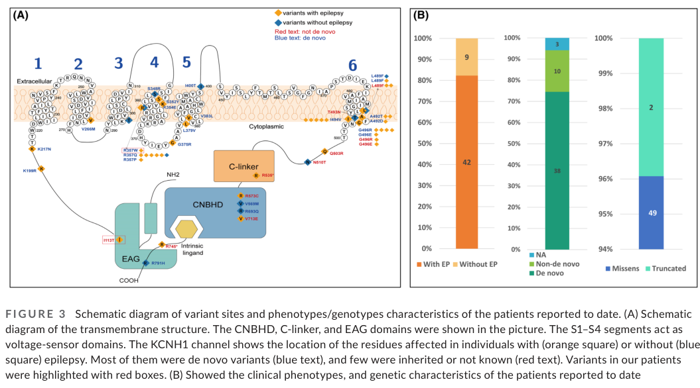

A Mendelian neurodevelopmental disorder caused by heterozygous, almost always de novo, gain-of-function missense variants in KCNH1, which encodes Kv10.1 (EAG1, ether-a-go-go), a voltage-gated potassium channel expressed predominantly in the central nervous system. KCNH1 disease is best understood as a single gene-centric phenotypic spectrum rather than a set of separate syndromes. The two clinically recognisable endpoints — Temple-Baraitser syndrome (TBS) and Zimmermann-Laband syndrome type 1 (ZLS1) — sit at the syndromic end and share a common facial gestalt, while a substantial and growing share of KCNH1-positive individuals ascertained through exome sequencing or epilepsy gene panels have intellectual disability and epilepsy with attenuated or absent gingival and nail features, so that neither syndromic diagnosis is clinically suspected. At the mildest end are individuals with isolated epilepsy or febrile seizures, typically carrying inherited or mosaic rather than de novo variants. Core features shared across the spectrum are intellectual disability, seizures, neonatal hypotonia, and a distinctive face (hypertelorism, broad nasal tip, wide mouth); syndrome-defining features are nail aplasia or hypoplasia with broad, long, proximally implanted thumbs and long halluces at the TBS end and gingival enlargement with hypertrichosis at the ZLS1 end. Pathogenic variants cluster in the S4 voltage sensor and the S6 pore-lining helix and shift channel activation in the hyperpolarizing direction, so Kv10.1 opens at more negative membrane potentials than normal. Because haploinsufficiency does not reproduce the phenotype, gain — not loss — of channel function is the pathogenic mechanism, which makes Kv10.1 inhibition the rational therapeutic target; the principal obstacle is achieving selectivity over the closely related cardiac channel Kv11.1 (hERG).
Ask a research question about KCNH1 Associated Disorder. OpenScientist will conduct autonomous deep research using the Disorder Mechanisms Knowledge Base and PubMed literature (typically 10-30 minutes).
Do not include personal health information in your question. Questions and results are cached in your browser's local storage.

Conditions with similar clinical presentations that must be differentiated from KCNH1 Associated Disorder:
name: KCNH1 Associated Disorder
creation_date: "2026-07-31T00:00:00Z"
category: Mendelian
description: >-
A Mendelian neurodevelopmental disorder caused by heterozygous, almost always
de novo, gain-of-function missense variants in KCNH1, which encodes Kv10.1
(EAG1, ether-a-go-go), a voltage-gated potassium channel expressed
predominantly in the central nervous system. KCNH1 disease is best understood
as a single gene-centric phenotypic spectrum rather than a set of separate
syndromes. The two clinically recognisable endpoints — Temple-Baraitser
syndrome (TBS) and Zimmermann-Laband syndrome type 1 (ZLS1) — sit at the
syndromic end and share a common facial gestalt, while a substantial and
growing share of KCNH1-positive individuals ascertained through exome
sequencing or epilepsy gene panels have intellectual disability and epilepsy
with attenuated or absent gingival and nail features, so that neither
syndromic diagnosis is clinically suspected. At the mildest end are
individuals with isolated epilepsy or febrile seizures, typically carrying
inherited or mosaic rather than de novo variants. Core features shared across
the spectrum are intellectual disability, seizures, neonatal hypotonia, and a
distinctive face (hypertelorism, broad nasal tip, wide mouth);
syndrome-defining features are nail aplasia or hypoplasia with broad, long,
proximally implanted thumbs and long halluces at the TBS end and gingival
enlargement with hypertrichosis at the ZLS1 end. Pathogenic variants cluster
in the S4 voltage sensor and the S6 pore-lining helix and shift channel
activation in the hyperpolarizing direction, so Kv10.1 opens at more negative
membrane potentials than normal. Because haploinsufficiency does not
reproduce the phenotype, gain — not loss — of channel function is the
pathogenic mechanism, which makes Kv10.1 inhibition the rational therapeutic
target; the principal obstacle is achieving selectivity over the closely
related cardiac channel Kv11.1 (hERG).
synonyms:
- KCNH1 related disorder
- KCNH1-related neurodevelopmental disorder
- KCNH1-related encephalopathy
- KCNH1 epilepsy
- Kv10.1 channelopathy
- EAG1 channelopathy
disease_term:
preferred_term: KCNH1 associated disorder
term:
id: MONDO:0100485
label: KCNH1 associated disorder
parents:
- Neurodevelopmental disorder
- Channelopathy
- Intellectual disability syndrome
- Developmental and epileptic encephalopathy
has_subtypes:
- name: TBS
display_name: Temple-Baraitser syndrome (syndromic, limb/nail-predominant)
description: >-
The limb- and nail-predominant syndromic endpoint of the spectrum:
intellectual disability and epilepsy with hypoplasia or aplasia of the
thumbnails and great-toe nails and broad, elongated, proximally implanted
thumbs and halluces. Curated in full as the separate dismech entry
Temple-Baraitser Syndrome (MONDO:0012735).
subtype_term:
preferred_term: Temple-Baraitser syndrome
term:
id: MONDO:0012735
label: Temple-Baraitser syndrome
genes:
- preferred_term: KCNH1
term:
id: hgnc:6250
label: KCNH1
evidence:
- reference: PMID:25420144
reference_title: "Mutations in the voltage-gated potassium channel gene KCNH1 cause Temple-Baraitser syndrome and epilepsy."
supports: SUPPORT
evidence_source: HUMAN_CLINICAL
snippet: >-
Temple-Baraitser syndrome (TBS) is a multisystem developmental disorder
characterized by intellectual disability, epilepsy, and hypoplasia or
aplasia of the nails of the thumb and great toe.
explanation: >-
Defines the TBS endpoint of the KCNH1 spectrum and its distinguishing
nail and digit features.
- name: ZLS1
display_name: Zimmermann-Laband syndrome type 1 (syndromic, gingival/hypertrichosis-predominant)
description: >-
The gingival- and hypertrichosis-predominant syndromic endpoint:
intellectual disability with coarse facial features, a large nose, gingival
enlargement, hypertrichosis, and hypoplasia of the terminal phalanges and
nails. KCNH1 is one of three ZLS genes (with KCNN3 and ATP6V1B2); only the
KCNH1 arm belongs to this spectrum. Curated in full as the separate dismech
entry Zimmermann-Laband Syndrome.
subtype_term:
preferred_term: Zimmermann-Laband syndrome 1
term:
id: MONDO:0024526
label: Zimmermann-Laband syndrome 1
genes:
- preferred_term: KCNH1
term:
id: hgnc:6250
label: KCNH1
evidence:
- reference: PMID:26264464
reference_title: "'Splitting versus lumping': Temple-Baraitser and Zimmermann-Laband Syndromes."
supports: SUPPORT
evidence_source: HUMAN_CLINICAL
snippet: >-
ZLS is characterized by facial dysmorphism including coarsening of the
face and a large nose, gingival enlargement, ID, hypoplasia of terminal
phalanges and nails and hypertrichosis.
explanation: >-
Defines the ZLS endpoint of the KCNH1 spectrum and its distinguishing
gingival and hypertrichosis features.
- name: Attenuated non-syndromic
display_name: KCNH1-related intellectual disability without TBS/ZLS features
description: >-
Individuals with severe intellectual disability with or without epilepsy in
whom the distinctive gingival and nail features of TBS/ZLS are absent, so
that neither syndromic diagnosis is clinically considered. This subtype is
recognised only after molecular diagnosis by exome sequencing or an
epilepsy gene panel, and is enriched for recurrent Gly496 substitutions and
for variants in the C-terminal cyclic nucleotide-binding homology domain
(CNBHD). It is the reason the gene-centric umbrella entity is needed: these
individuals have no syndromic label to be assigned to.
genes:
- preferred_term: KCNH1
term:
id: hgnc:6250
label: KCNH1
evidence:
- reference: PMID:33811134
reference_title: "Patients with KCNH1-related intellectual disability without distinctive features of Zimmermann-Laband/Temple-Baraitser syndrome."
supports: SUPPORT
evidence_source: HUMAN_CLINICAL
snippet: >-
Our study expands the phenotypical spectrum of KCNH1-related
encephalopathies to individuals with an attenuated extraneurological
phenotype preventing a clinical diagnosis of TBS or ZLS.
explanation: >-
Establishes the attenuated, non-syndromic subtype as a distinct arm of
the KCNH1 spectrum.
- reference: PMID:33811134
reference_title: "Patients with KCNH1-related intellectual disability without distinctive features of Zimmermann-Laband/Temple-Baraitser syndrome."
supports: SUPPORT
evidence_source: HUMAN_CLINICAL
snippet: >-
This subtype may be related to recurrent substitutions of the Gly496,
suggesting a genotype-phenotype correlation and, possibly, to variants in
the CNBHD domain.
explanation: >-
Provides the proposed genotypic correlate (Gly496 and CNBHD variants) of
the attenuated subtype.
- name: Isolated epilepsy
display_name: Isolated epilepsy or febrile seizures without encephalopathy
description: >-
The mildest arm of the spectrum: genetic generalized epilepsy, focal
epilepsy, or familial febrile seizures without intellectual disability or
syndromic dysmorphism. In contrast with the de novo variants that cause
encephalopathy, this arm is associated with inherited germline or
mosaic/somatic variants, consistent with the low-level mosaic mothers of
TBS probands who have epilepsy but are otherwise healthy.
genes:
- preferred_term: KCNH1
term:
id: hgnc:6250
label: KCNH1
evidence:
- reference: PMID:36285361
reference_title: "Phenotypic expansion of KCNH1-associated disorders to include isolated epilepsy and its associations with genotypes and molecular sub-regional locations."
supports: SUPPORT
evidence_source: HUMAN_CLINICAL
snippet: >-
Further analysis of 30 variants in 51 patients demonstrated that de novo
variants were associated with epileptic encephalopathy, while
mosaic/somatic or germline variants cause isolated epilepsy/FS.
explanation: >-
Separates the isolated-epilepsy arm from the encephalopathy arm and ties
the split to variant origin.
- reference: PMID:33494179
reference_title: "Novel KCNH1 Mutations Associated with Epilepsy: Broadening the Phenotypic Spectrum of KCNH1-Associated Diseases."
supports: SUPPORT
evidence_source: HUMAN_CLINICAL
snippet: >-
Here, we describe four patients suffering from a rather broad spectrum of
epilepsy-related disorders, ranging from developmental and epileptic
encephalopathy with intellectual disability (DEE) to genetic generalized
epilepsy (GGE), which all harbor novel KCNH1 mutations.
explanation: >-
Documents genetic generalized epilepsy at the mild end of the KCNH1
epilepsy spectrum.
inheritance:
- name: Autosomal dominant
inheritance_term:
preferred_term: Autosomal dominant inheritance
term:
id: HP:0000006
label: Autosomal dominant inheritance
description: >-
Heterozygous KCNH1 missense variants act dominantly, and the majority of
individuals with the syndromic or encephalopathic phenotypes carry de novo
variants, with inherited and mosaic alleles concentrated at the milder end
of the spectrum. A `de_novo_rate` is deliberately not asserted: the only
pooled figure available (38 of 51 published patients) comes from a
full-text table rather than any abstract cached here, so no quotable
source supports a specific percentage. Because dominance operates through a gain of channel
function on the tetrameric Kv10.1 complex rather than through
haploinsufficiency, truncating alleles are not straightforwardly pathogenic
and one reported nonsense variant segregated only weakly with epilepsy.
evidence:
- reference: PMID:25420144
reference_title: "Mutations in the voltage-gated potassium channel gene KCNH1 cause Temple-Baraitser syndrome and epilepsy."
supports: SUPPORT
evidence_source: HUMAN_CLINICAL
snippet: >-
Here we report damaging de novo mutations in KCNH1 (encoding a protein
called ether à go-go, EAG1 or KV10.1), a voltage-gated potassium channel
that is predominantly expressed in the central nervous system (CNS), in
six individuals with TBS.
explanation: >-
Establishes de novo heterozygous KCNH1 variants as the cause of the
syndromic phenotype.
- reference: PMID:33494179
reference_title: "Novel KCNH1 Mutations Associated with Epilepsy: Broadening the Phenotypic Spectrum of KCNH1-Associated Diseases."
supports: SUPPORT
evidence_source: HUMAN_CLINICAL
snippet: >-
In one family, we found a weak association of a novel nonsense mutation
with epilepsy, suggesting reduced penetrance, and which shows, in
agreement with previous findings, that gain-of-function effects rather
than haploinsufficiency are important for the pathogenicity of mutations.
explanation: >-
Supports that dominance is mediated by gain of function rather than
haploinsufficiency, which is why truncating alleles behave differently.
- name: Parental mosaicism
inheritance_term:
preferred_term: Somatic mosaicism
term:
id: HP:0001442
label: Typified by somatic mosaicism
description: >-
Low-level parental mosaicism for a pathogenic KCNH1 variant produces a
markedly attenuated phenotype — epilepsy without the syndromic features —
and explains apparently sporadic recurrence. This is the clearest natural
demonstration that KCNH1 phenotype severity scales with mutant allele
burden.
evidence:
- reference: PMID:25420144
reference_title: "Mutations in the voltage-gated potassium channel gene KCNH1 cause Temple-Baraitser syndrome and epilepsy."
supports: SUPPORT
evidence_source: HUMAN_CLINICAL
snippet: >-
we find that two mothers of children with TBS, who have epilepsy but are
otherwise healthy, are low-level (10% and 27%) mosaic carriers of
pathogenic KCNH1 mutations.
explanation: >-
Documents low-level maternal mosaicism producing an isolated-epilepsy
phenotype.
prevalence:
- population: Published literature cohorts worldwide
measure_type: CASES_IN_LITERATURE
prevalence_class: ULTRA_RARE
notes: >-
No population-based prevalence estimate exists. Case accrual is by
literature report: 23 cases were reported at the time of the 2022
non-syndromic series, and a 2023 genotype-phenotype analysis pooled 30
variants in 51 patients. Ascertainment is shifting from syndromic clinical
recognition to untargeted exome/panel sequencing, so the attenuated and
isolated-epilepsy arms are likely under-counted.
evidence:
- reference: PMID:33811134
reference_title: "Patients with KCNH1-related intellectual disability without distinctive features of Zimmermann-Laband/Temple-Baraitser syndrome."
supports: SUPPORT
evidence_source: HUMAN_CLINICAL
snippet: >-
Affected patients have severe intellectual disability (ID) with or
without epilepsy, hypertrichosis and distinctive features such as
gingival hyperplasia and nail hypoplasia/aplasia (present in 20/23
reported cases).
explanation: >-
Gives the published case count at the time of the series and the
proportion with the distinctive syndromic features.
- reference: PMID:36285361
reference_title: "Phenotypic expansion of KCNH1-associated disorders to include isolated epilepsy and its associations with genotypes and molecular sub-regional locations."
supports: SUPPORT
evidence_source: HUMAN_CLINICAL
snippet: >-
Further analysis of 30 variants in 51 patients demonstrated that de novo
variants were associated with epileptic encephalopathy
explanation: >-
Documents the size of the pooled published KCNH1 patient set analysed in
2023.
pathophysiology:
- name: KCNH1 Gain-of-Function Variants
biological_scale: MOLECULAR
description: >-
Heterozygous missense variants in KCNH1 alter Kv10.1 (EAG1), the
pore-forming subunit of a tetrameric voltage-gated potassium channel of the
ether-a-go-go family that is predominantly expressed in the central nervous
system. Pathogenic variants are concentrated in two structural hotspots —
the S4 voltage-sensor helix and the S6 pore-lining helix — with additional
variants in S3 and in the C-terminal cyclic nucleotide-binding homology
domain (CNBHD). The lesion is a gain, not a loss, of channel function:
haploinsufficiency does not reproduce the phenotype.
genes:
- preferred_term: KCNH1
term:
id: hgnc:6250
label: KCNH1
molecular_functions:
- preferred_term: voltage-gated potassium channel activity
term:
id: GO:0005249
label: voltage-gated potassium channel activity
modifier: INCREASED
evidence:
- reference: PMID:40986435
reference_title: "The molecular basis of KCNH1-related epileptic encephalopathy and the challenge of developing targeted therapeutics."
supports: SUPPORT
evidence_source: OTHER
snippet: >-
we review the molecular basis, clinical phenotype and treatment options
for KCNH1 epilepsy, which is caused by gain-of-function mutations in the
gene KCNH1, encoding the voltage-gated potassium channel Kv10.1
explanation: >-
States the core molecular lesion — gain-of-function variants in the
Kv10.1-encoding gene KCNH1.
- reference: PMID:36285361
reference_title: "Phenotypic expansion of KCNH1-associated disorders to include isolated epilepsy and its associations with genotypes and molecular sub-regional locations."
supports: SUPPORT
evidence_source: HUMAN_CLINICAL
snippet: >-
All hotspot variants associated with epileptic encephalopathy clustered
in transmembrane domain (S4 and S6), while those with isolated
epilepsy/seizures or TBS/ZLS without epilepsy were scattered in the
KCNH1.
explanation: >-
Localises the severity-determining hotspots to the S4 voltage sensor and
S6 pore helix. The accompanying figure is that paper's schematic of the
KCNH1 transmembrane topology with each reported variant site plotted and
colour-coded by whether the carrier had epilepsy.
images:
- KCNH1_Associated_Disorder-deep-research-falcon_artifacts/image-1.png
- reference: PMID:33811134
reference_title: "Patients with KCNH1-related intellectual disability without distinctive features of Zimmermann-Laband/Temple-Baraitser syndrome."
supports: SUPPORT
evidence_source: HUMAN_CLINICAL
snippet: >-
Four of these variants, p.(Thr294Met), p.(Ala492Asp), p.(Thr493Asn) and
p.(Gly496Arg), were located in the transmembrane domains S3 and S6 of
Kv10.1 and one, p.(Arg693Gln), in its C-terminal cyclic
nucleotide-binding homology domain (CNBHD).
explanation: >-
Documents the S3, S6, and CNBHD variant locations found in the
attenuated non-syndromic arm.
downstream:
- target: Hyperpolarizing Shift of Kv10.1 Activation
description: >-
Variants in the voltage sensor and pore helix lower the voltage
threshold at which the channel opens.
causal_link_type: DIRECT
- target: Disrupted Ciliary Localization and Sonic Hedgehog Signaling
description: >-
The same activating variants also perturb the pool of Kv10.1 at the base
of the primary cilium in non-excitable cells, which is the proposed route
to the extraneurological features. Modelled as indirect and scoped to the
emerging hypothesis group, because the ciliary phenotype has been shown
for specific activating variants in cultured human cells rather than
derived from the channel-gating shift itself.
causal_link_type: INDIRECT_KNOWN_INTERMEDIATES
intermediate_mechanisms:
- Trafficking of mutant Kv10.1 to pre-ciliary vesicles and the ciliary pocket
- Altered ciliary membrane composition in non-excitable cells
hypothesis_groups:
- ciliary_hedgehog_extraneurological
- name: Hyperpolarizing Shift of Kv10.1 Activation
biological_scale: MOLECULAR
description: >-
Disease-associated Kv10.1 subunits open at more negative membrane
potentials than wild type and close more slowly, so potassium conductance
is available at or near the resting potential where the wild-type channel
would be shut. Functional characterisation in Xenopus oocytes and human
HEK293T cells shows a decreased threshold of activation together with
delayed deactivation. Several severe variants, including Gly496Glu, are
non-functional when expressed alone and produce their gain of function only
after assembly with wild-type subunits, so the pathogenic species is the
heteromeric channel.
biological_processes:
- preferred_term: potassium ion transmembrane transport
term:
id: GO:0071805
label: potassium ion transmembrane transport
modifier: INCREASED
evidence:
- reference: PMID:25420144
reference_title: "Mutations in the voltage-gated potassium channel gene KCNH1 cause Temple-Baraitser syndrome and epilepsy."
supports: SUPPORT
evidence_source: IN_VITRO
snippet: >-
Characterization of the mutant channels in both Xenopus laevis oocytes
and human HEK293T cells showed a decreased threshold of activation and
delayed deactivation, demonstrating that TBS-associated KCNH1 mutations
lead to deleterious gain of function.
explanation: >-
Directly demonstrates the lowered activation threshold and slowed
deactivation that constitute the gain of function.
- reference: PMID:25915598
reference_title: "Mutations in KCNH1 and ATP6V1B2 cause Zimmermann-Laband syndrome."
supports: SUPPORT
evidence_source: IN_VITRO
snippet: >-
These data support a gain-of-function effect for all ZLS-associated
KCNH1 mutants.
explanation: >-
Confirms that the same gain-of-function direction holds for the variants
found at the ZLS end of the spectrum.
- reference: PMID:41656275
reference_title: "Crosstalk of KCNH1 and KCNH5 gain-of-function mutations leading to epilepsy and neurodevelopmental disorders."
supports: SUPPORT
evidence_source: IN_VITRO
snippet: >-
While Kv10.1-G496E alone did not yield functional K+ channels,
coexpression with Kv10.1 or Kv10.2 shifted the half-maximum voltage of
activation in the hyperpolarizing direction.
explanation: >-
Shows that the hyperpolarizing activation shift requires heteromeric
assembly with wild-type subunits for at least one severe variant.
downstream:
- target: Kv10 Heteromeric Crosstalk and Membrane Hyperpolarization
description: >-
The shifted channels assemble with wild-type Kv10.1 and Kv10.2 subunits
and hyperpolarize the cell.
causal_link_type: DIRECT
- target: Aberrant Neuronal Excitability and Network Dysfunction
description: >-
Excess potassium conductance near rest perturbs neuronal firing.
causal_link_type: DIRECT
- name: Kv10 Heteromeric Crosstalk and Membrane Hyperpolarization
biological_scale: CELLULAR
description: >-
Mutant Kv10.1 subunits co-assemble with wild-type Kv10.1 and with the
paralogous Kv10.2 (KCNH5), and the resulting heteromeric channels
hyperpolarize the cell membrane more than wild-type channels do. Notably,
the mutants do not perturb the closely related cardiac channel Kv11.1
(hERG), which is why the disorder is neurological rather than cardiac even
though hERG is the dominant off-target concern for therapy. Kv10.1 and
Kv10.2 are co-expressed in glutamatergic neurons of cortical layers III and
IV, giving the crosstalk an anatomical substrate.
cell_types:
- preferred_term: glutamatergic cortical neuron
term:
id: CL:0000679
label: glutamatergic neuron
biological_processes:
- preferred_term: regulation of membrane potential
term:
id: GO:0042391
label: regulation of membrane potential
modifier: ABNORMAL
evidence:
- reference: PMID:41656275
reference_title: "Crosstalk of KCNH1 and KCNH5 gain-of-function mutations leading to epilepsy and neurodevelopmental disorders."
supports: SUPPORT
evidence_source: IN_VITRO
snippet: >-
we used the fluorescent genetically encoded voltage indicator mK2-rEstus
and found that both, Kv10.1 and Kv10.2, hyperpolarized HEK293T cells, and
that coexpression of the GoF mutants augmented this hyperpolarization.
explanation: >-
Demonstrates that the gain-of-function subunits augment membrane
hyperpolarization in a cellular assay.
- reference: PMID:41656275
reference_title: "Crosstalk of KCNH1 and KCNH5 gain-of-function mutations leading to epilepsy and neurodevelopmental disorders."
supports: SUPPORT
evidence_source: IN_VITRO
snippet: >-
Our findings imply that interpretation of clinical symptoms related to
Kv10 GoF mutations requires considering the functional crosstalk with
Kv10.1 and Kv10.2 subunits, which are both expressed in glutamatergic
neurons in cortical Layers III and IV.
explanation: >-
Locates the Kv10.1/Kv10.2 crosstalk in cortical glutamatergic neurons and
argues it modulates the clinical phenotype.
- reference: PMID:41656275
reference_title: "Crosstalk of KCNH1 and KCNH5 gain-of-function mutations leading to epilepsy and neurodevelopmental disorders."
supports: SUPPORT
evidence_source: IN_VITRO
snippet: >-
By contrast, the mutants did not affect the function of Kv11.1 (KCNH2,
hERG1) channels.
explanation: >-
Shows the mutant subunits spare hERG, consistent with the absence of a
primary cardiac phenotype.
downstream:
- target: Aberrant Neuronal Excitability and Network Dysfunction
description: >-
Altered resting excitability of cortical glutamatergic neurons
destabilises network activity.
causal_link_type: DIRECT
- name: Aberrant Neuronal Excitability and Network Dysfunction
biological_scale: CELLULAR
description: >-
Kv10.1 is predominantly a neuronal channel and has been implicated in the
regulation of neurotransmitter release and synaptic transmission, so
excess potassium conductance near the resting potential disturbs neuronal
firing and network synchronisation. The step from channel gain of function
to seizures is, however, the least resolved link in the chain: a
hyperpolarizing conductance would naively be expected to dampen rather than
provoke firing, and reviews of the KCNH1 epilepsy phenotype state
explicitly that the epileptogenic mechanism is not understood. Candidate
resolutions include preferential silencing of inhibitory interneurons and
developmental rather than acute effects on circuit assembly.
cell_types:
- preferred_term: neuron
term:
id: CL:0000540
label: neuron
biological_processes:
- preferred_term: regulation of membrane potential
term:
id: GO:0042391
label: regulation of membrane potential
modifier: ABNORMAL
evidence:
- reference: PMID:27267311
reference_title: "Epilepsy in KCNH1-related syndromes."
supports: PARTIAL
evidence_source: HUMAN_CLINICAL
snippet: >-
Epilepsy is a key phenotypic feature in most individuals with
KCNH1-related syndromes, suggesting a direct role of KCNH1 in
epileptogenesis, although the underlying mechanism is not understood.
explanation: >-
Supports a direct epileptogenic role for KCNH1 while stating explicitly
that the mechanism linking channel gain of function to seizures is
unresolved; hence PARTIAL.
- reference: PMID:30149017
reference_title: "Novel venom-derived inhibitors of the human EAG channel, a putative antiepileptic drug target."
supports: PARTIAL
evidence_source: IN_VITRO
snippet: >-
However, the physiological role of hEAG1 in the central nervous system
remains elusive.
explanation: >-
Independently confirms that the normal CNS function of Kv10.1 — and
therefore the precise route to hyperexcitability — is still undefined.
downstream:
- target: Developmental and Epileptic Encephalopathy
description: >-
Network dysfunction from early life produces seizures together with
developmental impairment.
causal_link_type: DIRECT
- name: Disrupted Ciliary Localization and Sonic Hedgehog Signaling
biological_scale: CELLULAR
description: >-
Beyond its role in excitable cells, Kv10.1 localizes to the base of the
primary cilium — in pre-ciliary vesicles and the ciliary pocket — of human
dermal fibroblasts and retinal pigment epithelial cells, and pathogenic
activating variants perturb cilium morphology, assembly and disassembly,
and Sonic Hedgehog signal transduction. Because Hedgehog signalling
patterns the developing limb, craniofacial skeleton, and skin appendages,
this non-excitable-cell arm offers a mechanistic route to the
extraneurological features (nail and terminal-phalangeal hypoplasia, facial
gestalt, hypertrichosis, gingival overgrowth) that neuronal
hyperexcitability alone does not explain.
cell_types:
- preferred_term: dermal fibroblast
term:
id: CL:0002551
label: fibroblast of dermis
- preferred_term: retinal pigment epithelial cell
term:
id: CL:0002586
label: retinal pigment epithelial cell
biological_processes:
- preferred_term: smoothened signaling pathway
term:
id: GO:0007224
label: smoothened signaling pathway
modifier: ABNORMAL
- preferred_term: cilium assembly
term:
id: GO:0060271
label: cilium assembly
modifier: ABNORMAL
evidence:
- reference: PMID:35639255
reference_title: "Potassium Channel KCNH1 Activating Variants Cause Altered Functional and Morphological Ciliogenesis."
supports: SUPPORT
evidence_source: IN_VITRO
snippet: >-
In this work, we provide evidence that KCNH1 localizes at the base of the
cilium in pre-ciliary vesicles and ciliary pocket of human dermal
fibroblasts and retinal pigment epithelial (hTERT RPE1) cells and that
the pathogenic missense variants (L352V and R330Q; NP_002229.1) perturb
cilia morphology, assembly/disassembly, and Sonic Hedgehog signaling,
disclosing a multifaceted role of the protein.
explanation: >-
Demonstrates ciliary localization of KCNH1 and disruption of ciliogenesis
and Hedgehog signalling by pathogenic activating variants.
downstream:
- target: Extraneurological Developmental Anomalies
description: >-
Impaired Hedgehog-dependent patterning in non-excitable tissues yields
the nail, digit, facial, and gingival features.
causal_link_type: INDIRECT_KNOWN_INTERMEDIATES
intermediate_mechanisms:
- Altered Hedgehog-dependent patterning of the limb bud autopod
- Altered Hedgehog-dependent patterning of craniofacial mesenchyme
- Altered Hedgehog-dependent patterning of skin appendages
hypothesis_groups:
- ciliary_hedgehog_extraneurological
- name: Developmental and Epileptic Encephalopathy
biological_scale: ORGANISM
description: >-
The neurological output of the spectrum: infantile-onset seizures on a
background of global developmental delay and intellectual disability, with
a diffusely slow EEG background. Seizures are frequently drug-resistant —
complete control on medication is the exception, polytherapy the rule — and
status epilepticus is common and can be fatal. Both generalized and focal
tonic-clonic seizures occur.
evidence:
- reference: PMID:27267311
reference_title: "Epilepsy in KCNH1-related syndromes."
supports: SUPPORT
evidence_source: HUMAN_CLINICAL
snippet: >-
Complete seizure control was achieved with pharmacological treatment in
2/7 patients; polytherapy was required in 4/7 patients. Status
epilepticus occurred in 4/7 patients.
explanation: >-
Quantifies the drug resistance and the frequency of status epilepticus in
the KCNH1 epilepsy phenotype.
- reference: PMID:27267311
reference_title: "Epilepsy in KCNH1-related syndromes."
supports: SUPPORT
evidence_source: HUMAN_CLINICAL
snippet: >-
EEG showed a diffusely slow background in 7/7 patients with epilepsy,
with variable epileptiform abnormalities.
explanation: >-
Documents the consistent diffusely slow EEG background, the
encephalopathic signature.
- reference: PMID:40986435
reference_title: "The molecular basis of KCNH1-related epileptic encephalopathy and the challenge of developing targeted therapeutics."
supports: SUPPORT
evidence_source: OTHER
snippet: >-
these genetic disorders are now recognized as belonging to a broad
spectrum of KCNH1-related encephalopathies characterized by developmental
delay, intellectual disability, facial dysmorphism and infantile-onset
seizures.
explanation: >-
Defines the shared encephalopathic core of the spectrum, including
infantile seizure onset.
- name: Extraneurological Developmental Anomalies
biological_scale: ORGANISM
description: >-
The non-neurological output of the spectrum: nail aplasia or hypoplasia
with hypoplastic terminal phalanges, broad, long, proximally implanted
thumbs and long great toes, a recognisable facial gestalt (hypertelorism,
broad nasal tip, wide mouth, coarsening with age), hypertrichosis, and
gingival enlargement. These features are variably expressed: nail
hypoplasia can be mild and can develop over time, and in the attenuated
subtype the gingival and nail features are absent altogether. Their
presence or absence, rather than any neurological difference, is what
assigns an individual to TBS, to ZLS1, or to neither.
evidence:
- reference: PMID:26264464
reference_title: "'Splitting versus lumping': Temple-Baraitser and Zimmermann-Laband Syndromes."
supports: SUPPORT
evidence_source: HUMAN_CLINICAL
snippet: >-
KCNH1 mutation-positive individuals present with severe ID, neonatal
hypotonia, hypertelorism, broad nasal tip, wide mouth, nail a/hypoplasia,
a proximal implanted and long thumb and long great toes.
explanation: >-
Enumerates the shared core phenotype of the spectrum, spanning the
neurological and extraneurological features.
- reference: PMID:26264464
reference_title: "'Splitting versus lumping': Temple-Baraitser and Zimmermann-Laband Syndromes."
supports: SUPPORT
evidence_source: HUMAN_CLINICAL
snippet: >-
Clinical evaluation of our mutation-positive individuals revealed that
one of the main characteristics of TMBTS/ZLS, namely the pronounced nail
hypoplasia of the great toes and thumbs, can be mild and develop over
time.
explanation: >-
Documents the age-dependence and variable expressivity of the
syndrome-defining nail feature.
mechanistic_hypotheses:
- hypothesis_group_id: ciliary_hedgehog_extraneurological
hypothesis_label: >-
Ciliary Kv10.1 and Hedgehog signalling explain the extraneurological
features
status: EMERGING
description: >-
Proposes that the limb, nail, craniofacial, hair, and gingival features of
the spectrum arise not from neuronal hyperexcitability but from a separate,
non-excitable-cell role of Kv10.1 at the base of the primary cilium, where
activating variants disturb ciliogenesis and Sonic Hedgehog signal
transduction during development. The supporting data are from human dermal
fibroblasts and hTERT RPE1 cells; the causal link from disturbed
fibroblast/RPE Hedgehog signalling to the specific human malformations has
not been demonstrated in developing tissue, which is why this is recorded
as emerging rather than canonical.
evidence:
- reference: PMID:35639255
reference_title: "Potassium Channel KCNH1 Activating Variants Cause Altered Functional and Morphological Ciliogenesis."
supports: SUPPORT
evidence_source: IN_VITRO
snippet: >-
the pathogenic missense variants (L352V and R330Q; NP_002229.1) perturb
cilia morphology, assembly/disassembly, and Sonic Hedgehog signaling,
disclosing a multifaceted role of the protein
explanation: >-
Provides the in vitro basis for the ciliary/Hedgehog explanation of the
extraneurological features.
phenotypes:
- category: Neurologic
name: Intellectual disability
description: >-
Intellectual disability is present across the syndromic and attenuated arms
of the spectrum and is typically severe; it is absent in the
isolated-epilepsy arm.
frequency: VERY_FREQUENT
phenotype_term:
preferred_term: Intellectual disability
term:
id: HP:0001249
label: Intellectual disability
severity: SEVERE
evidence:
- reference: PMID:33594261
reference_title: "Syndromic disorders caused by gain-of-function variants in KCNH1, KCNK4, and KCNN3-a subgroup of K(+) channelopathies."
supports: SUPPORT
evidence_source: HUMAN_CLINICAL
snippet: >-
Severe ID 22/23 96%
explanation: >-
Quantifies severe intellectual disability at 22/23 (96%) in the KCNH1
column, supporting both the VERY_FREQUENT band and the SEVERE severity
qualifier.
- reference: PMID:26264464
reference_title: "'Splitting versus lumping': Temple-Baraitser and Zimmermann-Laband Syndromes."
supports: SUPPORT
evidence_source: HUMAN_CLINICAL
snippet: >-
KCNH1 mutation-positive individuals present with severe ID, neonatal
hypotonia, hypertelorism, broad nasal tip, wide mouth, nail a/hypoplasia,
a proximal implanted and long thumb and long great toes.
explanation: >-
Lists severe intellectual disability as a constant feature of KCNH1
mutation-positive individuals.
- category: Neurologic
name: Global developmental delay
description: >-
Developmental delay is one of the four features that define the shared
encephalopathic core of the KCNH1 spectrum.
frequency: VERY_FREQUENT
phenotype_term:
preferred_term: Global developmental delay
term:
id: HP:0001263
label: Global developmental delay
evidence:
- reference: PMID:33594261
reference_title: "Syndromic disorders caused by gain-of-function variants in KCNH1, KCNK4, and KCNN3-a subgroup of K(+) channelopathies."
supports: SUPPORT
evidence_source: HUMAN_CLINICAL
snippet: >-
Severe DD 18/21 86%
explanation: >-
Quantifies severe developmental delay at 18/21 (86%) in the KCNH1
column, supporting the VERY_FREQUENT band.
- reference: PMID:40986435
reference_title: "The molecular basis of KCNH1-related epileptic encephalopathy and the challenge of developing targeted therapeutics."
supports: SUPPORT
evidence_source: OTHER
snippet: >-
a broad spectrum of KCNH1-related encephalopathies characterized by
developmental delay, intellectual disability, facial dysmorphism and
infantile-onset seizures
explanation: >-
Names developmental delay as a defining feature of the spectrum.
- category: Neurologic
name: Seizures
description: >-
Seizures are the most consistent neurological feature, typically of
infantile onset. Both generalized and focal tonic-clonic seizures occur,
and febrile seizures are the presenting form in the mildest arm.
frequency: VERY_FREQUENT
phenotype_term:
preferred_term: Seizure
term:
id: HP:0001250
label: Seizure
evidence:
- reference: PMID:33594261
reference_title: "Syndromic disorders caused by gain-of-function variants in KCNH1, KCNK4, and KCNN3-a subgroup of K(+) channelopathies."
supports: SUPPORT
evidence_source: HUMAN_CLINICAL
snippet: >-
Seizures/epilepsy 24/27 89%
explanation: >-
Quantifies seizures in the largest KCNH1 cohort at 24/27 (89%), which
maps to VERY_FREQUENT (80-100%).
- reference: PMID:27267311
reference_title: "Epilepsy in KCNH1-related syndromes."
supports: SUPPORT
evidence_source: HUMAN_CLINICAL
snippet: >-
Epilepsy was present in 7/9 patients.
explanation: >-
Corroborating count from an independent series (7/9, 78%); the larger
27-patient cohort above is the basis for the band.
- reference: PMID:27267311
reference_title: "Epilepsy in KCNH1-related syndromes."
supports: SUPPORT
evidence_source: HUMAN_CLINICAL
snippet: >-
Both generalized and focal tonic-clonic seizures were observed.
explanation: >-
Documents the seizure semiologies observed across the spectrum.
- category: Neurologic
name: Status epilepticus
description: >-
Status epilepticus is a frequent and potentially fatal complication;
refractory status epilepticus caused death from acute encephalopathy in a
reported patient.
frequency: FREQUENT
phenotype_term:
preferred_term: Status epilepticus
term:
id: HP:0002133
label: Status epilepticus
evidence:
- reference: PMID:27267311
reference_title: "Epilepsy in KCNH1-related syndromes."
supports: SUPPORT
evidence_source: HUMAN_CLINICAL
snippet: >-
Status epilepticus occurred in 4/7 patients.
explanation: >-
Quantifies status epilepticus among KCNH1 patients with epilepsy (4/7,
57%), supporting the FREQUENT band.
- reference: PMID:36285361
reference_title: "Phenotypic expansion of KCNH1-associated disorders to include isolated epilepsy and its associations with genotypes and molecular sub-regional locations."
supports: SUPPORT
evidence_source: HUMAN_CLINICAL
snippet: >-
Two patients experienced refractory status epilepticus (SE), of which one
patient died of acute encephalopathy induced by SE.
explanation: >-
Documents the mortality risk of refractory status epilepticus in this
disorder.
- category: Neurologic
name: Febrile seizures
description: >-
Familial febrile seizures with an inherited KCNH1 variant define the
mildest, non-encephalopathic arm of the spectrum.
phenotype_term:
preferred_term: Febrile seizure
term:
id: HP:0002373
label: Febrile seizure (within the age range of 3 months to 6 years)
evidence:
- reference: PMID:36285361
reference_title: "Phenotypic expansion of KCNH1-associated disorders to include isolated epilepsy and its associations with genotypes and molecular sub-regional locations."
supports: SUPPORT
evidence_source: HUMAN_CLINICAL
snippet: >-
Two novel KCNH1 variants were identified in three cases, including two
patients with FS with inherited variant (p.Ile113Thr) and one boy with
epilepsy with de novo variant (p.Arg357Trp).
explanation: >-
Documents inherited-variant febrile seizures as a KCNH1 presentation.
- category: Neurologic
name: Neonatal hypotonia
description: >-
Hypotonia in the neonatal period is a constant early feature of
KCNH1 mutation-positive individuals.
frequency: VERY_FREQUENT
phenotype_term:
preferred_term: Hypotonia
term:
id: HP:0001252
label: Hypotonia
onset:
onset_category: NEONATAL
evidence:
- reference: PMID:33594261
reference_title: "Syndromic disorders caused by gain-of-function variants in KCNH1, KCNK4, and KCNN3-a subgroup of K(+) channelopathies."
supports: SUPPORT
evidence_source: HUMAN_CLINICAL
snippet: >-
Hypotonia 25/27 96%
explanation: >-
Quantifies hypotonia at 25/27 (96%) in the KCNH1 column, supporting
VERY_FREQUENT rather than FREQUENT.
- reference: PMID:26264464
reference_title: "'Splitting versus lumping': Temple-Baraitser and Zimmermann-Laband Syndromes."
supports: SUPPORT
evidence_source: HUMAN_CLINICAL
snippet: >-
KCNH1 mutation-positive individuals present with severe ID, neonatal
hypotonia, hypertelorism, broad nasal tip, wide mouth, nail a/hypoplasia,
a proximal implanted and long thumb and long great toes.
explanation: >-
Names neonatal hypotonia among the constant features of the spectrum.
- category: Skeletal
name: Nail aplasia or hypoplasia
description: >-
Absent or hypoplastic nails, most pronounced on the thumbs and great toes,
are the cardinal extraneurological feature at the syndromic end. They may
be mild and develop over time, and are absent in the attenuated subtype.
Involvement is not uniform across nails: in the reference cohort the great
toe nail (89%) and the other finger and toe nails (80%) were affected more
often than the thumb nail (59%).
frequency: VERY_FREQUENT
phenotype_term:
preferred_term: Aplasia/Hypoplasia of the nails
term:
id: HP:0008386
label: Aplasia/Hypoplasia of the nails
evidence:
- reference: PMID:33594261
reference_title: "Syndromic disorders caused by gain-of-function variants in KCNH1, KCNK4, and KCNN3-a subgroup of K(+) channelopathies."
supports: SUPPORT
evidence_source: HUMAN_CLINICAL
snippet: >-
great toe nail
24/27 89%
explanation: >-
Quantifies absent or hypoplastic great toe nail at 24/27 (89%) in the
KCNH1 column, supporting VERY_FREQUENT. The descriptor HP:0008386 covers
nail involvement generally, so the band is set from "any nail involved":
two of the three sub-rows are at or above 80% (great toe nail 89%, other
finger and toe nails 80%), with only the thumb nail lower at 59%.
- reference: PMID:33811134
reference_title: "Patients with KCNH1-related intellectual disability without distinctive features of Zimmermann-Laband/Temple-Baraitser syndrome."
supports: SUPPORT
evidence_source: HUMAN_CLINICAL
snippet: >-
Affected patients have severe intellectual disability (ID) with or
without epilepsy, hypertrichosis and distinctive features such as
gingival hyperplasia and nail hypoplasia/aplasia (present in 20/23
reported cases).
explanation: >-
Quantifies the distinctive gingival and nail features in 20 of 23
reported cases at the syndromic end of the spectrum.
- category: Skeletal
name: Hypoplastic terminal phalanges
description: >-
Hypoplasia of the distal phalanges of the fingers accompanies the nail
changes and is part of the distal digital hypoplasia shared across the
syndromic potassium channelopathies.
frequency: FREQUENT
phenotype_term:
preferred_term: Aplasia/Hypoplasia of the distal phalanges of the hand
term:
id: HP:0009835
label: Aplasia/Hypoplasia of the distal phalanges of the hand
evidence:
- reference: PMID:33594261
reference_title: "Syndromic disorders caused by gain-of-function variants in KCNH1, KCNK4, and KCNN3-a subgroup of K(+) channelopathies."
supports: SUPPORT
evidence_source: HUMAN_CLINICAL
snippet: >-
Hypoplasia of terminal phalanges is a typical feature in individuals with
dominant KCNH1 (76%)
explanation: >-
Quantifies hypoplastic terminal phalanges at 76% in KCNH1 individuals,
supporting the FREQUENT band (30-79%).
- reference: PMID:33594261
reference_title: "Syndromic disorders caused by gain-of-function variants in KCNH1, KCNK4, and KCNN3-a subgroup of K(+) channelopathies."
supports: SUPPORT
evidence_source: HUMAN_CLINICAL
snippet: >-
There is notable overlap in the phenotypic findings of these syndromes
associated with dominant KCNN3, KCNH1, and KCNK4 variants, sharing
developmental delay and/or ID, coarse facial features, gingival
enlargement, distal digital hypoplasia, and hypertrichosis.
explanation: >-
Lists distal digital hypoplasia among the shared features of the
KCNH1-containing potassium channelopathy group.
- category: Skeletal
name: Broad, long, proximally implanted thumb
description: >-
A broad and elongated thumb with proximal implantation, together with long
great toes, is the limb signature at the Temple-Baraitser end of the
spectrum. Proximal placement with a long thumb (78%) is more consistent
than broadening of the thumb or toe (46%).
frequency: FREQUENT
phenotype_term:
preferred_term: Broad thumb
term:
id: HP:0011304
label: Broad thumb
evidence:
- reference: PMID:33594261
reference_title: "Syndromic disorders caused by gain-of-function variants in KCNH1, KCNK4, and KCNN3-a subgroup of K(+) channelopathies."
supports: SUPPORT
evidence_source: HUMAN_CLINICAL
snippet: >-
Broad thumbs and/or toes 11/24 46%
explanation: >-
Quantifies broad thumbs and/or toes at 11/24 (46%) in the KCNH1 column,
supporting the FREQUENT band.
- reference: PMID:26264464
reference_title: "'Splitting versus lumping': Temple-Baraitser and Zimmermann-Laband Syndromes."
supports: SUPPORT
evidence_source: HUMAN_CLINICAL
snippet: >-
KCNH1 mutation-positive individuals present with severe ID, neonatal
hypotonia, hypertelorism, broad nasal tip, wide mouth, nail a/hypoplasia,
a proximal implanted and long thumb and long great toes.
explanation: >-
Documents the proximally implanted long thumb as a recurrent feature.
- category: Skeletal
name: Long hallux
description: >-
Elongation of the great toe accompanies the thumb anomaly, reflecting the
serially homologous involvement of the fore- and hindlimb autopod.
frequency: FREQUENT
phenotype_term:
preferred_term: Long hallux
term:
id: HP:0001847
label: Long hallux
evidence:
- reference: PMID:33594261
reference_title: "Syndromic disorders caused by gain-of-function variants in KCNH1, KCNK4, and KCNN3-a subgroup of K(+) channelopathies."
supports: SUPPORT
evidence_source: HUMAN_CLINICAL
snippet: >-
Long great toes 15/24 63%
explanation: >-
Quantifies long great toes at 15/24 (63%) in the KCNH1 column,
supporting the FREQUENT band.
- reference: PMID:26264464
reference_title: "'Splitting versus lumping': Temple-Baraitser and Zimmermann-Laband Syndromes."
supports: SUPPORT
evidence_source: HUMAN_CLINICAL
snippet: >-
a proximal implanted and long thumb and long great toes
explanation: >-
Documents long great toes alongside the thumb anomaly.
- category: Craniofacial
name: Hypertelorism
description: >-
Increased interocular distance is part of the recognisable facial gestalt
shared across the spectrum, which is more consistent than the limb
phenotype. No `frequency` is asserted: the cohort frequency table does not
break out individual facial features, and the available sources describe
the facial gestalt qualitatively.
phenotype_term:
preferred_term: Hypertelorism
term:
id: HP:0000316
label: Hypertelorism
evidence:
- reference: PMID:26264464
reference_title: "'Splitting versus lumping': Temple-Baraitser and Zimmermann-Laband Syndromes."
supports: SUPPORT
evidence_source: HUMAN_CLINICAL
snippet: >-
Clinical comparison of all published KCNH1 mutation-positive individuals
revealed a similar facial but variable limb phenotype.
explanation: >-
Establishes that the facial phenotype, which includes hypertelorism, is
the more consistent element of the spectrum.
- category: Craniofacial
name: Wide mouth
description: >-
A wide mouth is a recurrent element of the KCNH1 facial gestalt. As with
the other facial features, no `frequency` is asserted because no source
quantifies it separately.
phenotype_term:
preferred_term: Wide mouth
term:
id: HP:0000154
label: Wide mouth
evidence:
- reference: PMID:26264464
reference_title: "'Splitting versus lumping': Temple-Baraitser and Zimmermann-Laband Syndromes."
supports: SUPPORT
evidence_source: HUMAN_CLINICAL
snippet: >-
hypertelorism, broad nasal tip, wide mouth
explanation: >-
Names wide mouth among the constant facial features.
- category: Craniofacial
name: Broad nasal tip
description: >-
A broad nasal tip is one of the constant elements of the KCNH1 facial
gestalt, listed alongside hypertelorism and wide mouth in the pooled
description of mutation-positive individuals.
phenotype_term:
preferred_term: Broad nasal tip
term:
id: HP:0000455
label: Broad nasal tip
evidence:
- reference: PMID:26264464
reference_title: "'Splitting versus lumping': Temple-Baraitser and Zimmermann-Laband Syndromes."
supports: SUPPORT
evidence_source: HUMAN_CLINICAL
snippet: >-
hypertelorism, broad nasal tip, wide mouth
explanation: >-
Names broad nasal tip among the constant facial features of KCNH1
mutation-positive individuals.
- category: Neurologic
name: Absent or severely limited speech
description: >-
Speech is frequently absent or minimal, consistent with the severe
intellectual disability that dominates the syndromic and attenuated arms.
Reported individuals include those with no spoken language into late
childhood.
phenotype_term:
preferred_term: Absent speech
term:
id: HP:0001344
label: Absent speech
evidence:
- reference: PMID:33594261
reference_title: "Syndromic disorders caused by gain-of-function variants in KCNH1, KCNK4, and KCNN3-a subgroup of K(+) channelopathies."
supports: SUPPORT
evidence_source: HUMAN_CLINICAL
snippet: >-
seizures and ID with no spoken language at age 9 years
explanation: >-
Documents absent spoken language in a KCNH1 individual at age 9. No
frequency is asserted, as the cohort table does not tabulate speech
separately from developmental delay.
- category: Craniofacial
name: Coarse facial features
description: >-
Coarsening of the face, with a large nose, is characteristic at the
Zimmermann-Laband end and is shared with the other syndromic potassium
channelopathies.
phenotype_term:
preferred_term: Coarse facial features
term:
id: HP:0000280
label: Coarse facial features
evidence:
- reference: PMID:33594261
reference_title: "Syndromic disorders caused by gain-of-function variants in KCNH1, KCNK4, and KCNN3-a subgroup of K(+) channelopathies."
supports: SUPPORT
evidence_source: HUMAN_CLINICAL
snippet: >-
sharing developmental delay and/or ID, coarse facial features, gingival
enlargement, distal digital hypoplasia, and hypertrichosis
explanation: >-
Names coarse facial features among the shared syndromic findings.
- category: Oral
name: Gingival enlargement
description: >-
Gingival overgrowth is the cardinal extraneurological feature at the
Zimmermann-Laband end. It is absent in the attenuated non-syndromic
subtype, and its presence or absence is a principal determinant of which
clinical label is applied.
frequency: FREQUENT
phenotype_term:
preferred_term: Gingival overgrowth
term:
id: HP:0000212
label: Gingival overgrowth
evidence:
- reference: PMID:33594261
reference_title: "Syndromic disorders caused by gain-of-function variants in KCNH1, KCNK4, and KCNN3-a subgroup of K(+) channelopathies."
supports: SUPPORT
evidence_source: HUMAN_CLINICAL
snippet: >-
Gingival enlargement 15/19 79%
explanation: >-
Quantifies gingival enlargement in the KCNH1 column at 15/19 (79%),
supporting the FREQUENT band (30-79%).
- reference: PMID:33811134
reference_title: "Patients with KCNH1-related intellectual disability without distinctive features of Zimmermann-Laband/Temple-Baraitser syndrome."
supports: SUPPORT
evidence_source: HUMAN_CLINICAL
snippet: >-
Clinical reappraisal by the referring clinical geneticists confirmed the
absence of the distinctive gingival and nail features of TBS/ZLS.
explanation: >-
Documents that the feature is absent in the attenuated subtype. This
supports the variable-expressivity claim only; it cannot support a
frequency band in either direction, which is why the quantitative Gripp
row above carries the band.
- category: Integumentary
name: Hypertrichosis
description: >-
Excessive hair growth is characteristic of the Zimmermann-Laband end of the
spectrum and is shared across the syndromic potassium channelopathies. It
is, however, the least frequent of the classical ZLS features in
KCNH1-mutated individuals specifically — 3 of the 16 KCNH1 patients scored
for it (19%), against 50% of KCNN3 and 100% of KCNK4 cases — so it
discriminates poorly within the KCNH1 arm.
frequency: OCCASIONAL
phenotype_term:
preferred_term: Hypertrichosis
term:
id: HP:0000998
label: Hypertrichosis
evidence:
- reference: PMID:33594261
reference_title: "Syndromic disorders caused by gain-of-function variants in KCNH1, KCNK4, and KCNN3-a subgroup of K(+) channelopathies."
supports: SUPPORT
evidence_source: HUMAN_CLINICAL
snippet: >-
Hypertrichosis 3/16 19%
explanation: >-
Quantifies hypertrichosis in the KCNH1 column of the cohort frequency
table at 3/16 (19%), which maps to OCCASIONAL (5-29%), not FREQUENT.
- reference: PMID:33811134
reference_title: "Patients with KCNH1-related intellectual disability without distinctive features of Zimmermann-Laband/Temple-Baraitser syndrome."
supports: SUPPORT
evidence_source: HUMAN_CLINICAL
snippet: >-
Affected patients have severe intellectual disability (ID) with or
without epilepsy, hypertrichosis and distinctive features such as
gingival hyperplasia and nail hypoplasia/aplasia
explanation: >-
Supports the disease-phenotype association itself, separately from the
frequency band.
genetic:
- name: KCNH1
gene_term:
preferred_term: KCNH1
term:
id: hgnc:6250
label: KCNH1
relationship_type: CAUSATIVE
variant_origin: DE_NOVO
presence: PRESENT
notes: >-
KCNH1 encodes Kv10.1 (EAG1), the single causal gene of this spectrum.
Pathogenic alleles are missense and act by gain of function; the position
of the substitution, together with whether it arose de novo or was
inherited/mosaic, is the main determinant of where an individual falls on
the phenotypic spectrum. De novo variants in the S4 and S6 transmembrane
hotspots produce epileptic encephalopathy; recurrent Gly496 substitutions
and CNBHD variants are associated with the attenuated non-syndromic
presentation; inherited germline or mosaic variants produce isolated
epilepsy or febrile seizures. Truncating alleles are not straightforwardly
pathogenic, since haploinsufficiency is not the mechanism.
evidence:
- reference: PMID:36285361
reference_title: "Phenotypic expansion of KCNH1-associated disorders to include isolated epilepsy and its associations with genotypes and molecular sub-regional locations."
supports: SUPPORT
evidence_source: HUMAN_CLINICAL
snippet: >-
Variants in the KCNH1 cause a spectrum of epileptic disorders ranging
from a benign form of genetic isolated epilepsy/FS to intractable form of
epileptic encephalopathy. The genotypes and variant locations help
explaining the phenotypic variation of patients with KCNH1 variant.
explanation: >-
States the genotype-to-position-to-severity relationship that structures
the spectrum.
- reference: PMID:33494179
reference_title: "Novel KCNH1 Mutations Associated with Epilepsy: Broadening the Phenotypic Spectrum of KCNH1-Associated Diseases."
supports: SUPPORT
evidence_source: HUMAN_CLINICAL
snippet: >-
De novo missense variants in the pore region of the channel result in
severe phenotypes presenting usually with DEE with various malformations.
explanation: >-
Independently confirms that de novo pore-region variants produce the
severe encephalopathic end of the spectrum.
treatments:
- name: Anti-Seizure Medication
description: >-
Seizure control is the mainstay of management, but the epilepsy is
frequently drug-resistant: in a nine-patient series only a minority
achieved complete control on medication and most required polytherapy. No
anti-seizure medication is specific for the KCNH1 mechanism, and none of
the currently available agents targets Kv10.1. The agents listed are those
reported to have produced control or meaningful seizure reduction in the
published series; they reflect what was tried in a small cohort rather than
an evidence-based preference, and the same series records poor control on
clonazepam, nitrazepam, ethosuximide, prednisone, and lacosamide, with
rufinamide causing seizure exacerbation.
therapeutic_modality: SMALL_MOLECULE
treatment_term:
preferred_term: Pharmacotherapy
term:
id: NCIT:C15986
label: Pharmacotherapy
therapeutic_agent:
- preferred_term: carbamazepine
term:
id: CHEBI:3387
label: carbamazepine
- preferred_term: valproic acid
term:
id: CHEBI:39867
label: valproic acid
- preferred_term: phenytoin
term:
id: CHEBI:8107
label: phenytoin
- preferred_term: topiramate
term:
id: CHEBI:63631
label: topiramate
- preferred_term: lamotrigine
term:
id: CHEBI:6367
label: lamotrigine
target_mechanisms:
- target: Seizures
treatment_effect: INHIBITS
description: >-
Anti-seizure medication is symptomatic, acting on the seizure phenotype
rather than on the upstream Kv10.1 channel defect.
evidence:
- reference: PMID:27267311
reference_title: "Epilepsy in KCNH1-related syndromes."
supports: PARTIAL
evidence_source: HUMAN_CLINICAL
snippet: >-
Complete seizure control was achieved with pharmacological treatment in
2/7 patients; polytherapy was required in 4/7 patients.
explanation: >-
Supports pharmacotherapy as standard management while documenting its
limited efficacy; hence PARTIAL.
- reference: PMID:27267311
reference_title: "Epilepsy in KCNH1-related syndromes."
supports: SUPPORT
evidence_source: HUMAN_CLINICAL
snippet: >-
Complete seizure control was obtained with monotherapy in one patient
(carbamazepine in Patient 3). Patient 5 responded to valproic acid with
phenytoin.
explanation: >-
Names the specific agents that achieved seizure control, supporting the
carbamazepine, valproic acid, and phenytoin entries in
therapeutic_agent. Topiramate and lamotrigine are listed as agents but
are deliberately not covered by this snippet. The sentence naming them
is quotable only in a form that misquotes the paper: the cached PDF text
breaks "lamotrigine" across a hyphenated line ("lamotrig-" / "ine") and
renders "significant" with a U+FB01 fi ligature. The validator's
normalisation lowercases, spells out Greek letters, replaces punctuation
with spaces, and collapses whitespace, but does not fold Unicode
ligatures — so the cache normalises to "lamotrig ine", which no correct
spelling of the drug can match, and "significant" can never match
"significant". A string reproducing both artifacts does validate, but it
would quote the text-extraction layer rather than the paper, so it is
not used here.
- name: Kv10.1-Directed Precision Therapy (Investigational)
description: >-
Because the disorder is caused by gain of Kv10.1 function, inhibiting or
right-shifting the channel is the rational disease-specific target. No such
agent is approved. Two obstacles dominate development. First, selectivity:
Kv10.1 is closely related to the cardiac channel Kv11.1 (hERG), which is
uniquely promiscuous in binding drugs, so a non-selective Kv10.1 blocker
risks cardiac repolarization toxicity. Second, mechanism of action: expert
argument favours allosteric modulators that shift the activation threshold
in the depolarizing direction over pore blockers that abolish channel
function altogether. Spider-venom inhibitor cystine knot peptides (Aa1a,
Ap1a) that target both activation and inactivation gating are the most
potent peptidic hEAG1 inhibitors reported and are being pursued as leads.
This is investigational: no clinical trial data exist.
therapeutic_modality: PEPTIDE
treatment_term:
preferred_term: Pharmacotherapy
term:
id: NCIT:C15986
label: Pharmacotherapy
target_mechanisms:
- target: Hyperpolarizing Shift of Kv10.1 Activation
treatment_effect: INHIBITS
description: >-
A Kv10.1-selective inhibitor or a depolarizing allosteric modulator would
reverse the lowered activation threshold that constitutes the primary
molecular lesion.
evidence:
- reference: PMID:40986435
reference_title: "The molecular basis of KCNH1-related epileptic encephalopathy and the challenge of developing targeted therapeutics."
supports: SUPPORT
evidence_source: OTHER
snippet: >-
A major challenge in developing disease-specific anti-seizure
medications for KCNH1 epilepsy is selectivity over Kv11.1 (hERG), a
closely related channel that plays a fundamental role in repolarization
of the cardiac action potential and which is uniquely susceptible to
inhibition by a diverse range of drugs.
explanation: >-
Identifies hERG cross-reactivity as the principal obstacle to a
Kv10.1-directed therapy.
- reference: PMID:40986435
reference_title: "The molecular basis of KCNH1-related epileptic encephalopathy and the challenge of developing targeted therapeutics."
supports: SUPPORT
evidence_source: OTHER
snippet: >-
We argue that allosteric modulators of Kv10.1 that induce a depolarizing
shift in the channel's activation threshold are more likely to provide
seizure control in KCNH1 epilepsy patients than pore blockers that
annihilate channel function.
explanation: >-
States the preferred pharmacological strategy, matching the direction of
the molecular lesion.
- reference: PMID:30149017
reference_title: "Novel venom-derived inhibitors of the human EAG channel, a putative antiepileptic drug target."
supports: SUPPORT
evidence_source: IN_VITRO
snippet: >-
Aa1a and Ap1a are the most potent peptidic inhibitors of hEAG1 reported
to date, and they present a novel mode of action by targeting both the
activation and inactivation gating of the channel.
explanation: >-
Documents the leading peptidic Kv10.1 inhibitor leads and their
gating-modifier mechanism.
- name: Gingivectomy and Gingivoplasty
description: >-
Surgical reduction of the enlarged gingiva, performed under general
anaesthesia, is the definitive management for the gingival fibromatosis at
the Zimmermann-Laband end of the spectrum. It is functional as well as
cosmetic: gingival overgrowth can bury the dentition and block tooth
eruption, and resection restores masticatory function and a normal
occlusal relationship. Regrowth is expected — recurrence was documented at
two-year follow-up — so this is a repeatable palliative procedure rather
than a cure, and it does not address the channel defect.
therapeutic_modality: SURGERY
treatment_term:
preferred_term: Gingivectomy
term:
id: NCIT:C82090
label: Gingivectomy
target_mechanisms:
- target: Gingival enlargement
treatment_effect: INHIBITS
description: >-
Resects the overgrown tissue, acting on the gingival manifestation
itself rather than on any upstream mechanism node.
evidence:
- reference: PMID:39087232
reference_title: "Clinical and genetic evaluations of Zimmermann-Laband syndrome with gingival fibromatosis: a rare case report."
supports: SUPPORT
evidence_source: HUMAN_CLINICAL
snippet: >-
Gingivectomy and gingivoplasty were performed under general anesthesia.
After surgery, the gingival appearance improved significantly, and the
masticatory function of the teeth was restored.
explanation: >-
Documents the procedure and its functional benefit in a
KCNH1-confirmed patient.
- reference: PMID:39087232
reference_title: "Clinical and genetic evaluations of Zimmermann-Laband syndrome with gingival fibromatosis: a rare case report."
supports: PARTIAL
evidence_source: HUMAN_CLINICAL
snippet: >-
After 2-year follow-up, the gingival showed slightly hyperplasia.
explanation: >-
Documents recurrence at two years, supporting the palliative rather than
curative framing; PARTIAL because it qualifies the benefit.
- name: Genetic Counseling
description: >-
Counseling addresses the predominantly de novo origin of the pathogenic
variant and the consequent low but non-negligible recurrence risk. Because
low-level parental mosaicism is documented — mothers with only epilepsy
carrying 10% and 27% mutant allele fractions — a negative standard
parental test does not exclude recurrence, and mosaicism-sensitive testing
should be considered.
therapeutic_modality: BEHAVIORAL
treatment_term:
preferred_term: Genetic Counseling
term:
id: NCIT:C15240
label: Genetic Counseling
evidence:
- reference: PMID:25420144
reference_title: "Mutations in the voltage-gated potassium channel gene KCNH1 cause Temple-Baraitser syndrome and epilepsy."
supports: SUPPORT
evidence_source: HUMAN_CLINICAL
snippet: >-
we find that two mothers of children with TBS, who have epilepsy but are
otherwise healthy, are low-level (10% and 27%) mosaic carriers of
pathogenic KCNH1 mutations.
explanation: >-
Establishes documented parental mosaicism as the basis for the
recurrence-risk counseling caveat.
diagnosis:
- name: Molecular Genetic Testing
description: >-
Diagnosis rests on identification of a heterozygous pathogenic KCNH1
missense variant. Because a substantial share of affected individuals lack
the gingival and nail features that would prompt a clinical diagnosis of
TBS or ZLS, the diagnosis is now most often made by untargeted testing —
whole-exome sequencing or an epilepsy gene panel — rather than by
phenotype-driven single-gene testing. Clinical reappraisal after a
molecular result is worthwhile, since nail hypoplasia can be subtle and can
emerge over time.
evidence:
- reference: PMID:33811134
reference_title: "Patients with KCNH1-related intellectual disability without distinctive features of Zimmermann-Laband/Temple-Baraitser syndrome."
supports: SUPPORT
evidence_source: HUMAN_CLINICAL
snippet: >-
We report a series of seven patients with ID and de novo pathogenic
KCNH1 variants identified by whole-exome sequencing or an epilepsy gene
panel in whom the diagnosis of TBS/ZLS had not been first considered.
explanation: >-
Shows that untargeted sequencing, not clinical syndrome recognition, is
the route to diagnosis for a substantial subset.
- name: Electroencephalography
description: >-
EEG is the characteristic supporting investigation. The consistent finding
is a diffusely slow background — present in every patient with epilepsy in
the reported series — on which variable epileptiform abnormalities are
superimposed. The diffuse slowing is what marks the picture as
encephalopathic rather than as isolated epilepsy, so EEG contributes to
placing an individual on the spectrum as well as to seizure management. It
is not diagnostic of KCNH1 disease on its own.
evidence:
- reference: PMID:27267311
reference_title: "Epilepsy in KCNH1-related syndromes."
supports: SUPPORT
evidence_source: HUMAN_CLINICAL
snippet: >-
EEG showed a diffusely slow background in 7/7 patients with epilepsy,
with variable epileptiform abnormalities.
explanation: >-
Establishes the consistent EEG signature across all patients with
epilepsy in the series.
- name: Brain MRI
description: >-
Brain MRI is performed to exclude structural causes rather than to confirm
the diagnosis. Findings are inconsistent and non-specific, reported in a
minority of patients, so a normal scan does not argue against the
diagnosis.
evidence:
- reference: PMID:27267311
reference_title: "Epilepsy in KCNH1-related syndromes."
supports: PARTIAL
evidence_source: HUMAN_CLINICAL
snippet: >-
abnormalities in 3/9 patients
explanation: >-
Documents that MRI abnormalities occur in only a minority (3/9); PARTIAL
because this supports MRI as a non-specific adjunct rather than as a
diagnostic test.
differential_diagnoses:
- name: KCNK4-related FHEIG syndrome
description: >-
Gain-of-function KCNK4 variants produce facial dysmorphism, hypertrichosis,
epilepsy, intellectual disability, and gingival overgrowth — a phenotype
that overlaps the KCNH1 spectrum closely enough that the two have been
proposed as members of one syndromic potassium channelopathy group.
Distinguished by molecular testing.
evidence:
- reference: PMID:33594261
reference_title: "Syndromic disorders caused by gain-of-function variants in KCNH1, KCNK4, and KCNN3-a subgroup of K(+) channelopathies."
supports: SUPPORT
evidence_source: HUMAN_CLINICAL
snippet: >-
We suggest to combine the phenotypes and define a new subgroup of
potassium channelopathies caused by increased K+ conductance, referred to
as syndromic neurodevelopmental K+ channelopathies due to dominant
variants in KCNH1, KCNK4, or KCNN3.
explanation: >-
Establishes KCNK4 and KCNN3 disorders as the closest phenotypic mimics of
the KCNH1 spectrum.
- name: KCNN3-related syndromic neurodevelopmental disorder
description: >-
Dominant KCNN3 gain-of-function variants produce a clinical picture sharing
developmental delay, coarse facial features, gingival enlargement, distal
digital hypoplasia, and hypertrichosis with the KCNH1 spectrum. KCNN3 is
also a cause of Zimmermann-Laband syndrome, so the overlap is at the
syndromic label as well as at the feature level. Distinguished by molecular
testing.
evidence:
- reference: PMID:33594261
reference_title: "Syndromic disorders caused by gain-of-function variants in KCNH1, KCNK4, and KCNN3-a subgroup of K(+) channelopathies."
supports: SUPPORT
evidence_source: HUMAN_CLINICAL
snippet: >-
There is notable overlap in the phenotypic findings of these syndromes
associated with dominant KCNN3, KCNH1, and KCNK4 variants, sharing
developmental delay and/or ID, coarse facial features, gingival
enlargement, distal digital hypoplasia, and hypertrichosis.
explanation: >-
Documents the specific overlapping features that make KCNN3 disorder a
differential.
- name: KCNH5-related neurodevelopmental disorder and epilepsy
description: >-
Gain-of-function variants in the paralogous KCNH5 (Kv10.2) cause
developmental disorders, intellectual disability, and epilepsy through the
same mechanism, and Kv10.1 and Kv10.2 subunits co-assemble, so the two
disorders are mechanistically as well as clinically adjacent.
Distinguished by molecular testing.
evidence:
- reference: PMID:41656275
reference_title: "Crosstalk of KCNH1 and KCNH5 gain-of-function mutations leading to epilepsy and neurodevelopmental disorders."
supports: SUPPORT
evidence_source: IN_VITRO
snippet: >-
Gain-of-function (GoF) mutations in KCNH1 (Kv10.1, hEAG1) and KCNH5
(Kv10.2, hEAG2) give rise to developmental disorders, intellectual
disability, and epilepsy.
explanation: >-
Establishes KCNH5 disease as the paralogous differential with a shared
mechanism.
discussions:
- discussion_id: kcnh1_gof_to_hyperexcitability
prompt: >-
How does a gain of potassium conductance, which hyperpolarizes the neuronal
membrane, produce seizures rather than suppressing them?
kind: KNOWLEDGE_GAP
status: OPEN
attaches_to:
- pathophysiology#Aberrant Neuronal Excitability and Network Dysfunction
rationale: >-
This is the central unexplained step of the disorder. Every functional
study agrees the variants increase Kv10.1 conductance and hyperpolarize the
membrane, yet the clinical phenotype is epilepsy. Reviews of the epilepsy
phenotype state outright that the epileptogenic mechanism is not
understood, and the normal CNS role of Kv10.1 itself remains undefined,
which means the pathophysiology chain in this entry has a genuinely
unresolved link between the molecular and organism levels rather than a
merely under-cited one.
proposed_experiments:
- experiment_id: kcnh1_interneuron_selectivity
name: Cell-type-resolved excitability phenotyping
description: >-
Cell-type-resolved electrophysiology in patient-derived or knock-in
neurons, testing whether inhibitory interneurons are preferentially
silenced by the gain of function while excitatory neurons are spared,
producing net disinhibition.
- experiment_id: kcnh1_developmental_circuit_assembly
name: Developmental-stage-resolved circuit characterisation
description: >-
Developmental-stage-resolved characterisation in a knock-in model,
testing whether the pathogenic effect is on circuit assembly during
development rather than on acute excitability in the mature network.
evidence:
- reference: PMID:27267311
reference_title: "Epilepsy in KCNH1-related syndromes."
supports: SUPPORT
evidence_source: HUMAN_CLINICAL
snippet: >-
suggesting a direct role of KCNH1 in epileptogenesis, although the
underlying mechanism is not understood
explanation: >-
Explicit statement from the epilepsy-phenotype series that the mechanism
is unresolved.
- discussion_id: kcnh1_lump_versus_split
prompt: >-
Should Temple-Baraitser syndrome and Zimmermann-Laband syndrome type 1 be
lumped into a single KCNH1-related entity, or kept as separate clinical
diagnoses?
kind: CONTROVERSY
status: OPEN
rationale: >-
The question was posed explicitly in the literature in 2015 and has not
been formally settled. The case for lumping is strong: the same variant has
been seen in both syndromes, the facial phenotype is shared, the limb
phenotype is variable and age-dependent, and a large group of patients fits
neither label. The case for splitting is that the two clinical gestalts are
recognisable and useful at the bedside. dismech resolves this pragmatically
rather than dogmatically — this gene-centric umbrella entry models the
spectrum and its shared mechanism, while the separate Temple-Baraitser
Syndrome and Zimmermann-Laband Syndrome entries retain the clinically
useful syndromic descriptions.
evidence:
- reference: PMID:26264464
reference_title: "'Splitting versus lumping': Temple-Baraitser and Zimmermann-Laband Syndromes."
supports: SUPPORT
evidence_source: HUMAN_CLINICAL
snippet: >-
In summary, we show that the phenotypic variability of individuals with
KCNH1 mutations is more pronounced than previously expected, and we
discuss whether KCNH1 mutations allow for "lumping" or for "splitting" of
TMBTS and ZLS.
explanation: >-
Poses the lumping-versus-splitting question that this entry's scope
decision answers.
classifications:
harrisons_chapter:
- classification_value: NEUROLOGIC
- classification_value: GENETICS_ENVIRONMENT_DISEASE
channelopathy_category:
classification_value: neurological channelopathy
mappings:
mondo_mappings:
- term:
id: MONDO:0100485
label: KCNH1 associated disorder
mapping_predicate: skos:exactMatch
mapping_source: MONDO
mapping_justification: Primary MONDO disease term for this entry.
- term:
id: MONDO:0012735
label: Temple-Baraitser syndrome
mapping_predicate: skos:narrowMatch
mapping_source: MONDO
mapping_justification: >-
Syndromic endpoint of this spectrum; a MONDO descendant of
MONDO:0100485, curated separately as Temple-Baraitser Syndrome.
- term:
id: MONDO:0024526
label: Zimmermann-Laband syndrome 1
mapping_predicate: skos:narrowMatch
mapping_source: MONDO
mapping_justification: >-
Syndromic endpoint of this spectrum; a MONDO descendant of
MONDO:0100485. The dismech Zimmermann-Laband Syndrome entry is bound to
the gene-agnostic parent MONDO:0000200, which also covers the KCNN3 and
ATP6V1B2 causes that fall outside this spectrum.
notes: >
Scope and relationship to the two syndromic entries. This entry is the
gene-centric umbrella for the KCNH1 phenotypic spectrum (MONDO:0100485,
itself the parent of Temple-Baraitser syndrome and Zimmermann-Laband syndrome
type 1 in MONDO). It is deliberately not a duplicate of the existing
Temple-Baraitser Syndrome and Zimmermann-Laband Syndrome entries: those
curate the two recognisable clinical gestalts in depth, whereas this entry
curates what they have in common and, crucially, the two arms of the spectrum
that have no syndromic label at all — the attenuated non-syndromic
intellectual disability group and the isolated epilepsy/febrile seizure
group. Without this entry those patients have nowhere to live in the
knowledge base.
It is modelled as a Disease rather than a Grouping because it is a MONDO
disease entity in its own right with a single shared causal gene and a
single shared molecular mechanism, and because two of its four arms are not
themselves separate dismech Disease entries — a Grouping, which is an
explicit union over existing entries, could not represent them.
Note that the dismech Zimmermann-Laband Syndrome entry is bound to
MONDO:0000200, the gene-agnostic ZLS parent, and therefore also covers the
KCNN3 and ATP6V1B2 causes of ZLS. Only its KCNH1 arm (ZLS1, MONDO:0024526)
belongs to this spectrum.
NEC preflight. A gene-frequency-versus-MONDO named-entity-confusion preflight
was run before curation: the MONDO definition of MONDO:0100485 names KCNH1 as
the causal gene (RO:0004003 HGNC:6250), and every reference cited here is a
KCNH1 paper, so the entity resolved correctly.
GeneReviews. No GeneReviews chapter exists for KCNH1, Temple-Baraitser
syndrome, or Zimmermann-Laband syndrome; PubMed searches for all three
returned no GeneReviews records, so the mandatory GeneReviews phenotype
baseline does not apply to this entry.
Why two subtypes have no subtype_term. The TBS and ZLS1 arms are grounded to
MONDO:0012735 and MONDO:0024526, but the "Attenuated non-syndromic" and
"Isolated epilepsy" arms are deliberately left ungrounded, which raises an
advisory test warning. MONDO contains exactly three terms in this space —
MONDO:0100485 and those two syndromic endpoints — and has no term for either
remaining arm. That absence is not a curation oversight; it is the very gap
this entry exists to fill, since those patients have no syndromic label.
Grounding them would require either inventing a term or circularly reusing
the parent MONDO:0100485, which would wrongly assert that the subtype is the
whole disease. Minting MONDO terms for these two arms is the correct upstream
fix and a reasonable follow-up request to the MONDO maintainers.
datasets:
KCNH1-associated disorder is an autosomal-dominant neurodevelopmental potassium-channelopathy spectrum caused principally by heterozygous activating missense variants in KCNH1, which encodes the voltage-gated potassium channel Kv10.1/Eag1. The spectrum includes Temple–Baraitser syndrome (TMBTS), KCNH1-related Zimmermann–Laband syndrome type 1 (ZLS1), syndromic developmental delay with hypotonia and epilepsy, developmental and epileptic encephalopathy (DEE), and—based on newer evidence—milder isolated febrile seizures or epilepsy. Boundaries between TMBTS and ZLS1 are clinically and molecularly porous; it is often more accurate to represent them as overlapping manifestations of one KCNH1-related spectrum. (tian2023phenotypicexpansionof pages 1-2, wrede2021novelkcnh1mutations pages 1-2, gripp2021syndromicdisorderscaused pages 1-2)
The best recent aggregate analysis included 51 affected individuals and 30 variants: 42/51 (82%) had epilepsy or seizures, 38/51 carried de novo variants, and 49/51 (96%) had missense variants. Inherited, mosaic, or brain-somatic variants generally produced later-onset or more restricted epilepsy, whereas recurrent de novo variants in voltage-sensor S4 and pore-associated S6 regions were enriched in severe early-onset epilepsy and moderate-to-severe developmental impairment. (tian2023phenotypicexpansionof pages 1-2, tian2023phenotypicexpansionof pages 9-10, tian2023phenotypicexpansionof pages 3-5, tian2023phenotypicexpansionof pages 5-8, tian2023phenotypicexpansionof media 96944f0f)
| Domain | Established findings | Quantitative evidence | Suggested ontology terms | Evidence limitations |
|---|---|---|---|---|
| Disease scope / identifiers | KCNH1-associated disorder is best treated as a dominant KCNH1-related neurodevelopmental potassium-channelopathy spectrum that includes Temple-Baraitser syndrome (TMBTS), KCNH1-related Zimmermann-Laband syndrome type 1 (ZLS1), syndromic developmental delay/hypotonia/seizures, and milder isolated epilepsy. Distinguish from ATP6V1B2-related ZLS2 and KCNN3-related ZLS3. Open Targets supports associations with Temple-Baraitser syndrome and Zimmermann-Laband syndrome. (gripp2021syndromicdisorderscaused pages 1-2, napoli2022potassiumchannelkcnh1 pages 1-2, gu2024clinicalandgenetic pages 1-2, OpenTargets Search: Temple-Baraitser syndrome,Zimmermann-Laband syndrome-KCNH1) | Open Targets evidence size: 5 for Temple-Baraitser syndrome and 5 for Zimmermann-Laband syndrome; association scores ~0.79-0.80. (OpenTargets Search: Temple-Baraitser syndrome,Zimmermann-Laband syndrome-KCNH1) | MONDO_0000200 Zimmermann-Laband syndrome; EFO_0009062 Temple-Baraitser syndrome; NCIT: potassium channelopathy | No single universally adopted MONDO term for the full KCNH1 spectrum was retrieved; nomenclature varies across reports. |
| Inheritance / genetics | Predominantly heterozygous missense KCNH1 variants with autosomal dominant effect, usually de novo; inherited, mosaic, and somatic variants also occur and are often associated with milder or more focal phenotypes. Gain-of-function is the main pathogenic mechanism; truncating variants appear less consistently pathogenic. (tian2023phenotypicexpansionof pages 1-2, wrede2021novelkcnh1mutations pages 1-2, tian2023phenotypicexpansionof pages 9-10, wrede2021novelkcnh1mutations pages 6-8, tian2023phenotypicexpansionof pages 5-8) | In aggregated review of 51 patients: 42/51 had epilepsy; 38/51 had de novo variants; 13/51 had non-de novo variants; 49/51 (96%) harbored missense variants. In an ID cohort, de novo pathogenic KCNH1 variants were found in 4/1447 individuals (0.3%). (tian2023phenotypicexpansionof pages 9-10, tian2023phenotypicexpansionof pages 5-8, bramswig2015‘splittingversuslumping’ pages 2-4) | HGNC: KCNH1; SO: missense_variant, stop_gained, somatic_variant; HPO: HP:0000006 Autosomal dominant inheritance | Formal penetrance estimates are unavailable; low penetrance is suggested for p.Arg535* from family observations only. |
| Core phenotypes | Core syndromic findings include developmental delay/intellectual disability, epilepsy/seizures, hypotonia, coarse facial features, gingival enlargement, distal digital/terminal phalangeal and nail hypoplasia, and occasional hypertrichosis. Milder isolated febrile seizures/epilepsy without classic dysmorphism also occur. (gripp2021syndromicdisorderscaused pages 1-2, gripp2021syndromicdisorderscaused pages 9-10, tian2023phenotypicexpansionof pages 3-5, tian2023phenotypicexpansionof pages 5-8, gu2024clinicalandgenetic pages 1-2) | Among dominant KCNH1 cases summarized by Gripp et al.: absent/hypoplastic great toe nail 24/27 (89%); other finger/toe nail anomalies 16/20 (80%); gingival enlargement 15/19 (79%); hypertrichosis 3/16 (19%); hypoplasia of terminal phalanges 76%; proximal placement/long thumb 78%; long great toes 63%; broad thumb/toe 46%. Epilepsy/seizures in 82% of 51 reported patients. (gripp2021syndromicdisorderscaused pages 9-10, tian2023phenotypicexpansionof pages 5-8) | HPO: HP:0001263 Global developmental delay; HP:0001249 Intellectual disability; HP:0001250 Seizure; HP:0001290 Generalized hypotonia; HP:0000212 Gingival overgrowth; HP:0001558 Hypertrichosis; HP:0010808 Nail dysplasia; HP:0009882 Short distal phalanx of toe | Frequencies come from pooled case reports/reviews with missing data denominators; phenotype ascertainment is heterogeneous. |
| Mechanism / pathophysiology | Functional evidence supports pathogenic gain-of-function in Kv10.1/Eag1, with epilepsy-linked hotspots enriched in S4 and S6. KCNH1 localizes to the ciliary base/ciliary pocket; activating variants perturb cilia morphology, assembly/disassembly, intraflagellar transport, and SHH signaling, providing a developmental mechanism beyond excitability alone. (tian2023phenotypicexpansionof pages 9-10, tian2023phenotypicexpansionof pages 5-8, napoli2022potassiumchannelkcnh1 pages 9-11, napoli2022potassiumchannelkcnh1 pages 1-2, tian2023phenotypicexpansionof media 96944f0f) | Nine missense mutations showed gain-of-function electrophysiologic effects in prior studies summarized by Napoli et al.; in Tian et al., hotspot variants associated with epilepsy clustered in S4/S6, whereas milder non-epilepsy variants were more scattered. (tian2023phenotypicexpansionof pages 5-8, napoli2022potassiumchannelkcnh1 pages 9-11) | GO: potassium ion transmembrane transport; GO: regulation of membrane potential; GO: cilium assembly; GO: cilium organization; GO: Hedgehog signaling pathway; CL: neuron; CL: fibroblast; UBERON: primary cilium | Mechanistic evidence is largely in vitro and inferential; no direct in vivo KCNH1 disease model was retrieved. |
| Diagnosis | Diagnosis relies on syndrome recognition plus molecular testing, especially trio-WES/WES, with Sanger confirmation in reported cases. EEG and brain MRI help characterize seizures/complications; some patients have normal MRI/EEG early, whereas severe cases show diffuse slowing, subclinical temporal seizures, acute encephalopathy changes, or corpus callosum anomalies. (tian2023phenotypicexpansionof pages 3-5, tian2023phenotypicexpansionof pages 5-8, bramswig2015‘splittingversuslumping’ pages 2-4, gu2024clinicalandgenetic pages 1-2, gu2024clinicalandgenetic pages 6-7) | In Tian et al., 98 patients with unexplained epilepsy/familial febrile seizures were screened and 2 KCNH1 missense variants were identified in 3 individuals. Case series report seizure onset from neonatal period to adolescence; newly reported isolated-epilepsy cases began at 8 months to 1.5 years. (tian2023phenotypicexpansionof pages 2-3, tian2023phenotypicexpansionof pages 8-9, tian2023phenotypicexpansionof pages 3-5) | NCIT: Whole Exome Sequencing; HPO: HP:0002353 EEG abnormality; HP:0410018 Abnormal brain MRI; HP:0001250 Seizure | No standardized disease-specific diagnostic criteria or biomarker panel was retrieved; evidence is from case reports/series. |
| Treatment / management | Management is symptomatic: antiseizure medications (ASMs) are mainstay for epilepsy; gingivectomy/gingivoplasty and dental rehabilitation are used for severe gingival overgrowth. Reported ASMs include valproate, diazepam, phenobarbital, midazolam, carbamazepine, phenytoin, levetiracetam, lamotrigine, clobazam, sulthiame, lacosamide, oxcarbazepine; cannabidiol was reported effective in at least one case. (tian2023phenotypicexpansionof pages 8-9, tian2023phenotypicexpansionof pages 3-5, bramswig2015‘splittingversuslumping’ pages 2-4, tian2023phenotypicexpansionof pages 9-10, gu2024clinicalandgenetic pages 1-2, gu2024clinicalandgenetic pages 6-7) | More than half of epilepsy patients responded well to ASMs: 20/34 (59%). Case 3 in Tian et al. became seizure-free on valproate after refractory febrile seizures required IV midazolam. Dental surgery in a 2-year-old ZLS case improved mastication/lip closure, with slight recurrence at 2-year follow-up. (tian2023phenotypicexpansionof pages 9-10, tian2023phenotypicexpansionof pages 3-5, gu2024clinicalandgenetic pages 1-2, gu2024clinicalandgenetic pages 6-7) | NCIT: Anticonvulsant Therapy; NCIT: Valproic Acid; NCIT: Midazolam; NCIT: Gingivectomy; NCIT: Gingivoplasty | No KCNH1-targeted therapy, approved precision treatment, or interventional trial was retrieved. Reported responses are anecdotal/case-based. |
| Prognosis / outcomes | Outcomes are highly variable: some patients have mild isolated febrile seizures with normal cognition, whereas others develop severe DEE, regression, gait impairment, status epilepticus, acute encephalopathy, or death. Non-de novo/inherited or mosaic variants tend to be milder on average. (tian2023phenotypicexpansionof pages 1-2, wrede2021novelkcnh1mutations pages 2-4, tian2023phenotypicexpansionof pages 3-5, tian2023phenotypicexpansionof pages 5-8, tian2023phenotypicexpansionof pages 9-10) | Status epilepticus occurred in 21% of reported patients; 2 newly reported patients developed super-refractory SE. One newly reported patient died 20 days after seizure onset due to uncontrollable seizures and severe brain damage. (tian2023phenotypicexpansionof pages 3-5, tian2023phenotypicexpansionof pages 9-10) | HPO: HP:0002349 Status epilepticus; HP:0002376 Developmental regression; HP:0001252 Hypotonia; HP:0012378 Poor prognosis | No formal survival curves, life-expectancy estimates, or validated quality-of-life studies were retrieved. |
| Epidemiology / population | The disorder is very rare and currently described through aggregated case reports, case series, and review cohorts rather than population registries. Cases are reported across multiple ancestries and both sexes. (gripp2021syndromicdisorderscaused pages 1-2, bramswig2015‘splittingversuslumping’ pages 2-4, gu2024clinicalandgenetic pages 1-2) | Largest aggregated dataset cited here includes 51 patients with KCNH1 variants; another review summarized 27 dominant KCNH1 syndromic cases. No prevalence or incidence estimates were retrieved. (gripp2021syndromicdisorderscaused pages 9-10, tian2023phenotypicexpansionof pages 5-8) | NCIT: Rare Disease | No population-based prevalence, incidence, carrier frequency, founder effect, or sex-ratio data were found. |
| Model / experimental systems | Experimental support comes from in vitro systems: Xenopus laevis oocytes, HEK293T cells, CHO cells, human dermal fibroblasts, and hTERT-RPE1 cells. These show altered channel gating and ciliary defects for pathogenic missense variants. (tian2023phenotypicexpansionof pages 9-10, napoli2022potassiumchannelkcnh1 pages 9-11, napoli2022potassiumchannelkcnh1 pages 1-2) | Functional studies summarized for 9 missense variants indicate increased whole-cell K+ conductance at negative potentials; Napoli et al. demonstrated abnormal cilia morphology and SHH-related defects in patient/mutant cell systems. (napoli2022potassiumchannelkcnh1 pages 9-11) | CL: fibroblast; CL: retinal pigment epithelial cell; GO: voltage-gated potassium channel activity | No dedicated mammalian or zebrafish KCNH1 disease model with recapitulated syndrome-level phenotype was retrieved from the gathered evidence. |
Table: This table condenses the current evidence base for KCNH1-associated disorder across clinical, genetic, mechanistic, diagnostic, and management domains. It is useful for rapid knowledge-base population because it highlights established findings, numeric evidence, ontology suggestions, and major evidence gaps.
Evidence is primarily aggregated disease-level evidence from published case reports, small cohorts, functional studies, and reviews—not population registries or longitudinal EHR studies. Patient-level observations are frequently re-aggregated across papers, so denominators vary by feature and should not be interpreted as unbiased prevalence estimates. The most informative recent sources are Tian et al. (published online October 2022; journal issue 2023; DOI 10.1111/cns.14001), Napoli et al. (31 May 2022; DOI 10.1007/s12035-022-02886-4), and the 2024 dental case report by Gu et al. (July 2024; DOI 10.22514/jocpd.2024.095). Foundational KCNH1 disease-association literature is indexed under PMID 25420144 and 25915598. (OpenTargets Search: Temple-Baraitser syndrome,Zimmermann-Laband syndrome-KCNH1, tian2023phenotypicexpansionof pages 1-2, napoli2022potassiumchannelkcnh1 pages 1-2, gu2024clinicalandgenetic pages 1-2)
The disorder is a Mendelian, dominant, syndromic neurodevelopmental channelopathy. Its defining manifestations are variable combinations of developmental delay/intellectual disability, early hypotonia, epilepsy, characteristic craniofacial appearance, gingival enlargement, hypoplasia of terminal phalanges and nails, and occasionally hypertrichosis. Mild presentations may consist of febrile seizures or epilepsy without dysmorphism or intellectual disability. (gripp2021syndromicdisorderscaused pages 1-2, gripp2021syndromicdisorderscaused pages 9-10, tian2023phenotypicexpansionof pages 3-5)
Important nomenclature distinction: KCNH1 causes ZLS1. ATP6V1B2-related disease is commonly called ZLS2, while KCNN3-related disease is ZLS3; KCNK4 causes an overlapping FHEIG/channelopathy phenotype. These should not be merged into a KCNH1 gene-specific entry. (gripp2021syndromicdisorderscaused pages 1-2, gripp2021syndromicdisorderscaused pages 9-10)
The primary cause is a pathogenic or likely pathogenic germline heterozygous KCNH1 variant, most often de novo and missense. Activating variants alter Kv10.1 gating and increase potassium conductance over physiologically important negative membrane potentials. The relationship between increased K+ conductance and epilepsy is not simply “more potassium current equals less excitation”: cell-type-specific effects, impaired inhibitory-network function, developmental signaling, and altered ciliary biology may all contribute. (tian2023phenotypicexpansionof pages 9-10, tian2023phenotypicexpansionof pages 5-8, napoli2022potassiumchannelkcnh1 pages 9-11)
No toxin, infection, diet, smoking, occupational exposure, or other environmental factor is known to cause the disorder. Fever, hot-water bathing, and acute illness may trigger seizures or status epilepticus in susceptible individuals but are not etiologic. One p.Arg357Trp patient had seizures precipitated by low-grade fever or hot-water bathing. (tian2023phenotypicexpansionof pages 3-5)
No validated genetic or environmental protective factor has been identified. Prompt fever management and an individualized seizure-rescue plan may reduce complications, but this is tertiary risk management rather than primary prevention. Modifier genes are unconfirmed; apparent severity differences remain only partly explained by variant location, functional strength, and mosaic fraction. (tian2023phenotypicexpansionof pages 5-8)
In 27 individuals with dominant KCNH1 variants summarized by Gripp et al.:
Across the broader 51-person KCNH1 spectrum, epilepsy/seizures occurred in 42/51 (82%). (tian2023phenotypicexpansionof pages 3-5, tian2023phenotypicexpansionof pages 5-8)
| Manifestation | Characteristics and course | Suggested HPO terms |
|---|---|---|
| Developmental delay/ID | Usually congenital or recognized in infancy; severe/profound in classic syndromic disease, but normal cognition is possible in inherited isolated epilepsy. May plateau or regress after seizure onset. | HP:0001263 Global developmental delay; HP:0001249 Intellectual disability; HP:0002376 Developmental regression |
| Epilepsy | Neonatal through adolescent onset; commonly infancy/early childhood. Focal, generalized tonic-clonic, tonic, myoclonic, atonic, absence, febrile, and mixed seizures occur. Severity ranges from self-limited febrile seizures to drug-resistant DEE and super-refractory status epilepticus. | HP:0001250 Seizure; HP:0002349 Focal seizures; HP:0002069 Generalized tonic-clonic seizure; HP:0002349 Status epilepticus |
| Hypotonia/motor impairment | Often neonatal or early infantile; variable gait acquisition. Some severely affected individuals never walk independently. | HP:0001319 Neonatal hypotonia; HP:0001290 Generalized hypotonia; HP:0001270 Motor delay |
| Speech/language impairment | Common in severe disease; ranges from delayed few-word speech to absent speech or loss of acquired words. | HP:0000750 Delayed speech and language development; HP:0001344 Absent speech |
| Behavioral findings | Autism-spectrum features, poor eye contact, and social-developmental delay have been reported, but frequencies are uncertain. | HP:0000729 Autistic behavior; HP:0000735 Impaired social interactions |
| Craniofacial phenotype | Coarse or long face, thick hair/eyebrows/eyelashes, broad or depressed nasal bridge, bulbous/prominent nose, full cheeks/lips, open mouth, and prominent earlobes; gestalt may evolve with age. | HP:0000280 Coarse facial features; HP:0000316 Hypertelorism; HP:0000455 Broad nasal tip |
| Gingival enlargement | Usually progressive; may delay tooth eruption, impair mastication, pronunciation, lip closure, oral hygiene, and occlusion. | HP:0000212 Gingival overgrowth; HP:0000680 Delayed eruption of teeth |
| Digital/nail abnormalities | Congenital or increasingly evident with age; broad/long thumbs or great toes, terminal phalangeal hypoplasia, and absent/hypoplastic nails. | HP:0001597 Abnormality of the nail; HP:0001792 Small nail; HP:0009882 Short distal phalanx of toe; HP:0011304 Broad thumb |
| Hypertrichosis | Variable and less frequent in KCNH1 than gingival/nail abnormalities. | HP:0000998 Hypertrichosis |
| Brain abnormalities | Many MRIs are normal. Reported abnormalities include corpus-callosum agenesis/hypoplasia, focal cortical dysplasia, and acute encephalopathy-related diffusion changes. | HP:0001274 Agenesis of corpus callosum; HP:0002539 Cortical dysplasia; HP:0410018 Abnormal brain MRI |
A 2023 patient with p.Arg357Trp had febrile seizures beginning at eight months, more than ten seizures/hour during fever at 14 months, mild developmental delay, and no nail or facial abnormalities. Conversely, severe classic patients may have profound ID, absent ambulation, gingival hyperplasia requiring repeated operations, and pharmacoresistant epilepsy. (tian2023phenotypicexpansionof pages 3-5, bramswig2015‘splittingversuslumping’ pages 2-4)
No validated EQ-5D, SF-36, PROMIS, or disease-specific quality-of-life dataset was found. Nevertheless, severe epilepsy, inability to walk or communicate, feeding/oral-health burden, repeated gingival surgery, and dependence in activities of daily living imply substantial patient and caregiver burden. The mild end of the spectrum can have normal cognition and seizure remission. (tian2023phenotypicexpansionof pages 3-5, bramswig2015‘splittingversuslumping’ pages 2-4, gu2024clinicalandgenetic pages 1-2)
KCNH1 is located on chromosome 1 and encodes a 989-amino-acid voltage-gated K+ channel with six transmembrane segments, an N-terminal EAG domain, S1–S4 voltage-sensor region, S5–S6 pore/gate region, C-linker, cyclic nucleotide-binding homology domain (CNBHD), and calmodulin-regulated C terminus. It is highly expressed in brain and also functions in non-excitable cells. (wrede2021novelkcnh1mutations pages 6-8, bramswig2015‘splittingversuslumping’ pages 2-4)
The 2023 distribution is visually summarized in Tian et al.’s channel-domain figure: epilepsy-associated variants are concentrated around gating-critical transmembrane regions, while inherited/non-de novo and non-epilepsy-associated variants are more dispersed. (tian2023phenotypicexpansionof media 96944f0f)
Individual variants should be evaluated under ACMG/AMP criteria using de novo status, population absence, phenotype specificity, recurrence, functional evidence, and domain constraint. A variant outside established hotspots should not be called pathogenic solely because it occurs in KCNH1. Conversely, truncating variants require particular caution because haploinsufficiency is not the established mechanism. The retrieved literature did not provide a complete current ClinVar enumeration or consistent ACMG classification for every reported allele.
No replicated modifier gene, disease-associated methylation signature, histone alteration, or recurrent pathogenic chromosomal rearrangement specifically defining KCNH1-associated disorder has been established. Large deletions involving KCNH1 may not phenocopy activating missense disease because loss of function is comparatively tolerated. (wrede2021novelkcnh1mutations pages 6-8)
There is no evidence that pollution, radiation, toxins, smoking, alcohol, diet, exercise, occupation, or infectious agents cause KCNH1-associated disorder. Fever and hyperthermic exposures can precipitate seizures in some genotypes. This suggests a clinically relevant trigger interaction—constitutive channel dysfunction plus temperature/illness-related reduction in seizure threshold—but not an environmental etiology. No infectious-agent taxonomy or CHEBI toxicant annotation is applicable. (tian2023phenotypicexpansionof pages 3-5)
Napoli et al. localized KCNH1 to pre-ciliary vesicles and the ciliary pocket in human dermal fibroblasts and hTERT-RPE1 cells. Pathogenic p.Leu352Val and p.Arg330Gln variants caused short or fragmented cilia, bulbous tips, multiciliation, defective IFT172 accumulation, impaired assembly/disassembly, ciliary-tip excision, and ectopic SHH activation. The authors’ abstract states that the variants “perturb cilia morphology, assembly/disassembly, and Sonic Hedgehog signaling.” This is in-vitro human-cell evidence, not proof that every patient manifestation is a classical ciliopathy. (napoli2022potassiumchannelkcnh1 pages 9-11, napoli2022potassiumchannelkcnh1 pages 1-2)
No reproducible patient transcriptomic, proteomic, metabolomic, lipidomic, single-cell, spatial-transcriptomic, or integrated multi-omic signature was found. Computational structural modeling predicts variant-specific destabilization or conformational change but remains supporting rather than definitive functional evidence. (wrede2021novelkcnh1mutations pages 6-8, tian2023phenotypicexpansionof pages 3-5)
Digital and nail involvement is usually bilateral, although detailed lateralization is inconsistently reported. Focal cortical dysplasia, when driven by a brain-somatic variant, is anatomically localized rather than generalized. (gripp2021syndromicdisorderscaused pages 5-6, wrede2021novelkcnh1mutations pages 6-8, napoli2022potassiumchannelkcnh1 pages 9-11)
Population prevalence and incidence are unknown. The largest literature aggregation available here comprised only 51 individuals. In one trio-WES-based intellectual-disability series, de novo pathogenic KCNH1 variants occurred in 4/1,447 (0.3%), but this is a diagnostic yield in an enriched ID cohort—not population prevalence. No robust sex ratio, ethnic enrichment, or geographic concentration is apparent. (tian2023phenotypicexpansionof pages 3-5, bramswig2015‘splittingversuslumping’ pages 2-4)
Consider KCNH1 testing in a child with developmental delay/ID plus epilepsy, particularly when accompanied by broad or long thumbs/great toes, nail hypoplasia, gingival enlargement, coarse facial features, or neonatal hypotonia. The absence of dysmorphism does not exclude KCNH1-related isolated epilepsy. (tian2023phenotypicexpansionof pages 3-5, tian2023phenotypicexpansionof pages 5-8)
Recommended characterization includes:
Major differentials include ATP6V1B2-related ZLS2/DDOD, KCNN3-related ZLS3, KCNK4-related FHEIG syndrome, Coffin–Siris syndromes, DOORS syndrome, Cantú syndrome, Cornelia de Lange spectrum, and other genetic DEEs. Nail/phalangeal pattern, gingival enlargement, hearing loss, hypertrichosis, cardiac findings, and molecular testing are discriminating features. (gripp2021syndromicdisorderscaused pages 1-2, gripp2021syndromicdisorderscaused pages 9-10)
No consensus clinical diagnostic criteria or newborn-screening assay exists.
Prognosis is genotype- and phenotype-dependent. Inherited or low-level mosaic variants tend to be associated with later seizure onset, less ID/DD, and a higher probability of seizure freedom. De novo S4/S6 hotspot variants more often produce early DEE, severe disability, and recurrent or drug-resistant seizures. (tian2023phenotypicexpansionof pages 1-2, tian2023phenotypicexpansionof pages 5-8)
Long-term morbidity may include profound cognitive and communication impairment, non-ambulation, recurrent seizures, dental/periodontal disease, and dependence for daily care. Recovery from the underlying developmental disorder is not expected, although seizure control, rehabilitation, and oral surgery can improve function.
There is no approved disease-modifying or KCNH1-selective therapy. Treatment follows seizure type and standard pediatric epilepsy/DEE practice. Reported agents include valproate, levetiracetam, lamotrigine, carbamazepine, oxcarbazepine, phenytoin, phenobarbital, clobazam, sulthiame, lacosamide, diazepam, and intravenous midazolam; cannabidiol was effective in at least one published case. Responses are heterogeneous, and several patients were resistant to multiple drugs. (wrede2021novelkcnh1mutations pages 2-4, tian2023phenotypicexpansionof pages 8-9, tian2023phenotypicexpansionof pages 9-10)
A p.Arg357Trp child with fever-triggered frequent seizures failed diazepam, valproate, and phenobarbital acutely, responded to continuous IV midazolam, and subsequently remained seizure-free on valproate 22 mg/kg/day through age two. This is anecdotal evidence, not a genotype-specific algorithm. (tian2023phenotypicexpansionof pages 3-5)
Suggested NCIT annotations: Anticonvulsant Therapy, Valproic Acid, Levetiracetam, Clobazam, Midazolam, and Cannabidiol.
For mild gingival enlargement, meticulous periodontal hygiene and surveillance are appropriate. Severe enlargement impairing eruption, mastication, speech, lip closure, or hygiene can require gingivectomy/gingivoplasty. In the 2024 p.Pro733Leu case, surgery restored mastication and gingival form; slight recurrence was present at two years, while permanent-tooth eruption progressed. Stainless-steel crowns successfully treated carious primary molars without secondary caries or periapical disease at follow-up. (gu2024clinicalandgenetic pages 1-2, gu2024clinicalandgenetic pages 6-7)
Suggested NCIT terms: Gingivectomy, Gingivoplasty, Dental Restoration Procedure.
Early physical, occupational, speech/language, feeding, behavioral, and augmentative-communication therapies are appropriate. Orthotics, mobility equipment, scoliosis surveillance, nutrition support, and caregiver respite should be individualized. A written fever and seizure-rescue plan is important for patients with temperature-sensitive epilepsy.
No relevant KCNH1-specific interventional ClinicalTrials.gov study, gene therapy, ASO/siRNA program, CRISPR trial, cell therapy, or validated channel-blocker trial was found. Kv10.1 blockade is mechanistically attractive for activating variants, but currently available blockers have substantial off-target/cardiac or oncologic-development concerns; clinical use cannot be recommended without disease-specific safety and efficacy studies.
Immunization should follow routine schedules; no KCNH1-specific vaccine indication or contraindication was identified.
KCNH1/Eag-family channels are evolutionarily conserved, including homology to the Drosophila melanogaster ether-à-go-go channel. Xenopus oocytes are extensively used for functional expression and electrophysiology. (tian2023phenotypicexpansionof pages 9-10, bramswig2015‘splittingversuslumping’ pages 2-4)
No naturally occurring companion-animal, livestock, or wildlife syndrome convincingly equivalent to human KCNH1-associated disorder was identified. Therefore, no breed/VBO association, veterinary prevalence, cross-species transmission, or zoonotic potential applies. This is a genetic channelopathy and is not transmissible between species.
These models directly test channel gating and cellular consequences but do not reproduce organism-level cognition, epilepsy networks, craniofacial development, or longitudinal treatment response. No dedicated KCNH1 knock-in mouse, zebrafish, Drosophila syndrome model, patient-derived neuronal iPSC model, or brain organoid with validated recapitulation of the human disorder was retrieved. Such models are a major research need for resolving the potassium-channel GOF epilepsy paradox and testing Kv10.1-selective therapies.
The evidence strongly supports KCNH1 gain of function as the principal upstream mechanism, but current clinical knowledge remains limited by small, overlapping case series, inconsistent phenotype ascertainment, and lack of prospective natural-history data. The most defensible knowledge-base representation is therefore a KCNH1-associated disorder spectrum, with TMBTS, ZLS1, DEE, and isolated epilepsy retained as phenotype labels rather than rigidly separate molecular diseases. High priorities are an international longitudinal registry, standardized seizure/developmental and quality-of-life outcomes, functional classification of individual variants, deep sequencing for mosaicism, patient-derived neuronal models, and development of safe Kv10.1-selective modulation. (tian2023phenotypicexpansionof pages 1-2, gripp2021syndromicdisorderscaused pages 1-2, tian2023phenotypicexpansionof pages 5-8, napoli2022potassiumchannelkcnh1 pages 9-11)
References
(tian2023phenotypicexpansionof pages 1-2): Mao‐Qiang Tian, Ren‐Ke Li, Fan Yang, Xiao‐Mei Shu, Juan Li, Jing Chen, Long‐Ying Peng, Xiao‐Hua Yu, and Chang‐Jian Yang. Phenotypic expansion of kcnh1 ‐associated disorders to include isolated epilepsy and its associations with genotypes and molecular sub‐regional locations. CNS Neuroscience & Therapeutics, 29:270-281, Oct 2023. URL: https://doi.org/10.1111/cns.14001, doi:10.1111/cns.14001. This article has 15 citations and is from a peer-reviewed journal.
(wrede2021novelkcnh1mutations pages 1-2): Randi von Wrede, Monika Jeub, Idil Ariöz, Christian E. Elger, Hubertus von Voss, Hanns-Georg Klein, Albert J. Becker, Susanne Schoch, Rainer Surges, and Wolfram S. Kunz. Novel kcnh1 mutations associated with epilepsy: broadening the phenotypic spectrum of kcnh1-associated diseases. Genes, 12:132, Jan 2021. URL: https://doi.org/10.3390/genes12020132, doi:10.3390/genes12020132. This article has 20 citations.
(gripp2021syndromicdisorderscaused pages 1-2): Karen W. Gripp, Sarah F. Smithson, Ingrid J. Scurr, Julia Baptista, Anirban Majumdar, Germaine Pierre, Maggie Williams, Lindsay B. Henderson, Ingrid M. Wentzensen, Heather McLaughlin, Lisette Leeuwen, Marleen E. H. Simon, Ellen van Binsbergen, Mary Beth P. Dinulos, Julie D. Kaplan, Anne McRae, Andrea Superti-Furga, Jean-Marc Good, and Kerstin Kutsche. Syndromic disorders caused by gain-of-function variants in kcnh1, kcnk4, and kcnn3—a subgroup of k+ channelopathies. European Journal of Human Genetics, 29:1384-1395, Feb 2021. URL: https://doi.org/10.1038/s41431-021-00818-9, doi:10.1038/s41431-021-00818-9. This article has 51 citations and is from a domain leading peer-reviewed journal.
(tian2023phenotypicexpansionof pages 9-10): Mao‐Qiang Tian, Ren‐Ke Li, Fan Yang, Xiao‐Mei Shu, Juan Li, Jing Chen, Long‐Ying Peng, Xiao‐Hua Yu, and Chang‐Jian Yang. Phenotypic expansion of kcnh1 ‐associated disorders to include isolated epilepsy and its associations with genotypes and molecular sub‐regional locations. CNS Neuroscience & Therapeutics, 29:270-281, Oct 2023. URL: https://doi.org/10.1111/cns.14001, doi:10.1111/cns.14001. This article has 15 citations and is from a peer-reviewed journal.
(tian2023phenotypicexpansionof pages 3-5): Mao‐Qiang Tian, Ren‐Ke Li, Fan Yang, Xiao‐Mei Shu, Juan Li, Jing Chen, Long‐Ying Peng, Xiao‐Hua Yu, and Chang‐Jian Yang. Phenotypic expansion of kcnh1 ‐associated disorders to include isolated epilepsy and its associations with genotypes and molecular sub‐regional locations. CNS Neuroscience & Therapeutics, 29:270-281, Oct 2023. URL: https://doi.org/10.1111/cns.14001, doi:10.1111/cns.14001. This article has 15 citations and is from a peer-reviewed journal.
(tian2023phenotypicexpansionof pages 5-8): Mao‐Qiang Tian, Ren‐Ke Li, Fan Yang, Xiao‐Mei Shu, Juan Li, Jing Chen, Long‐Ying Peng, Xiao‐Hua Yu, and Chang‐Jian Yang. Phenotypic expansion of kcnh1 ‐associated disorders to include isolated epilepsy and its associations with genotypes and molecular sub‐regional locations. CNS Neuroscience & Therapeutics, 29:270-281, Oct 2023. URL: https://doi.org/10.1111/cns.14001, doi:10.1111/cns.14001. This article has 15 citations and is from a peer-reviewed journal.
(tian2023phenotypicexpansionof media 96944f0f): Mao‐Qiang Tian, Ren‐Ke Li, Fan Yang, Xiao‐Mei Shu, Juan Li, Jing Chen, Long‐Ying Peng, Xiao‐Hua Yu, and Chang‐Jian Yang. Phenotypic expansion of kcnh1 ‐associated disorders to include isolated epilepsy and its associations with genotypes and molecular sub‐regional locations. CNS Neuroscience & Therapeutics, 29:270-281, Oct 2023. URL: https://doi.org/10.1111/cns.14001, doi:10.1111/cns.14001. This article has 15 citations and is from a peer-reviewed journal.
(napoli2022potassiumchannelkcnh1 pages 1-2): Giulia Napoli, Noemi Panzironi, Alice Traversa, Caterina Catalanotto, Valentina Pace, Francesco Petrizzelli, Agnese Giovannetti, Sara Lazzari, Carlo Cogoni, Marco Tartaglia, Massimo Carella, Tommaso Mazza, Antonio Pizzuti, Chiara Parisi, and Viviana Caputo. Potassium channel kcnh1 activating variants cause altered functional and morphological ciliogenesis. Molecular Neurobiology, 59:4825-4838, May 2022. URL: https://doi.org/10.1007/s12035-022-02886-4, doi:10.1007/s12035-022-02886-4. This article has 15 citations and is from a peer-reviewed journal.
(gu2024clinicalandgenetic pages 1-2): Yang Gu, Xiaoxue Yang, Xiaohe Guo, Meiling Wu, Xiaoyao Huang, Hao Guo, Shijie Li, Fei Fu, Mingyuan Liu, K. Xuan, and Anqi Liu. Clinical and genetic evaluations of zimmermann-laband syndrome with gingival fibromatosis: a rare case report. The Journal of clinical pediatric dentistry, 48 4:206-213, Jul 2024. URL: https://doi.org/10.22514/jocpd.2024.095, doi:10.22514/jocpd.2024.095. This article has 3 citations.
(OpenTargets Search: Temple-Baraitser syndrome,Zimmermann-Laband syndrome-KCNH1): Open Targets Query (Temple-Baraitser syndrome,Zimmermann-Laband syndrome-KCNH1, 2 results). Buniello, A. et al. (2025). Open Targets Platform: facilitating therapeutic hypotheses building in drug discovery. Nucleic Acids Research.
(wrede2021novelkcnh1mutations pages 6-8): Randi von Wrede, Monika Jeub, Idil Ariöz, Christian E. Elger, Hubertus von Voss, Hanns-Georg Klein, Albert J. Becker, Susanne Schoch, Rainer Surges, and Wolfram S. Kunz. Novel kcnh1 mutations associated with epilepsy: broadening the phenotypic spectrum of kcnh1-associated diseases. Genes, 12:132, Jan 2021. URL: https://doi.org/10.3390/genes12020132, doi:10.3390/genes12020132. This article has 20 citations.
(bramswig2015‘splittingversuslumping’ pages 2-4): Nuria C. Bramswig, C. W. Ockeloen, J. C. Czeschik, A. J. van Essen, R. Pfundt, J. Smeitink, B. T. Poll-The, H. Engels, T. M. Strom, D. Wieczorek, T. Kleefstra, and H.-J. Lüdecke. ‘splitting versus lumping’: temple–baraitser and zimmermann–laband syndromes. Human Genetics, 134:1089-1097, Aug 2015. URL: https://doi.org/10.1007/s00439-015-1590-1, doi:10.1007/s00439-015-1590-1. This article has 43 citations and is from a peer-reviewed journal.
(gripp2021syndromicdisorderscaused pages 9-10): Karen W. Gripp, Sarah F. Smithson, Ingrid J. Scurr, Julia Baptista, Anirban Majumdar, Germaine Pierre, Maggie Williams, Lindsay B. Henderson, Ingrid M. Wentzensen, Heather McLaughlin, Lisette Leeuwen, Marleen E. H. Simon, Ellen van Binsbergen, Mary Beth P. Dinulos, Julie D. Kaplan, Anne McRae, Andrea Superti-Furga, Jean-Marc Good, and Kerstin Kutsche. Syndromic disorders caused by gain-of-function variants in kcnh1, kcnk4, and kcnn3—a subgroup of k+ channelopathies. European Journal of Human Genetics, 29:1384-1395, Feb 2021. URL: https://doi.org/10.1038/s41431-021-00818-9, doi:10.1038/s41431-021-00818-9. This article has 51 citations and is from a domain leading peer-reviewed journal.
(napoli2022potassiumchannelkcnh1 pages 9-11): Giulia Napoli, Noemi Panzironi, Alice Traversa, Caterina Catalanotto, Valentina Pace, Francesco Petrizzelli, Agnese Giovannetti, Sara Lazzari, Carlo Cogoni, Marco Tartaglia, Massimo Carella, Tommaso Mazza, Antonio Pizzuti, Chiara Parisi, and Viviana Caputo. Potassium channel kcnh1 activating variants cause altered functional and morphological ciliogenesis. Molecular Neurobiology, 59:4825-4838, May 2022. URL: https://doi.org/10.1007/s12035-022-02886-4, doi:10.1007/s12035-022-02886-4. This article has 15 citations and is from a peer-reviewed journal.
(gu2024clinicalandgenetic pages 6-7): Yang Gu, Xiaoxue Yang, Xiaohe Guo, Meiling Wu, Xiaoyao Huang, Hao Guo, Shijie Li, Fei Fu, Mingyuan Liu, K. Xuan, and Anqi Liu. Clinical and genetic evaluations of zimmermann-laband syndrome with gingival fibromatosis: a rare case report. The Journal of clinical pediatric dentistry, 48 4:206-213, Jul 2024. URL: https://doi.org/10.22514/jocpd.2024.095, doi:10.22514/jocpd.2024.095. This article has 3 citations.
(tian2023phenotypicexpansionof pages 2-3): Mao‐Qiang Tian, Ren‐Ke Li, Fan Yang, Xiao‐Mei Shu, Juan Li, Jing Chen, Long‐Ying Peng, Xiao‐Hua Yu, and Chang‐Jian Yang. Phenotypic expansion of kcnh1 ‐associated disorders to include isolated epilepsy and its associations with genotypes and molecular sub‐regional locations. CNS Neuroscience & Therapeutics, 29:270-281, Oct 2023. URL: https://doi.org/10.1111/cns.14001, doi:10.1111/cns.14001. This article has 15 citations and is from a peer-reviewed journal.
(tian2023phenotypicexpansionof pages 8-9): Mao‐Qiang Tian, Ren‐Ke Li, Fan Yang, Xiao‐Mei Shu, Juan Li, Jing Chen, Long‐Ying Peng, Xiao‐Hua Yu, and Chang‐Jian Yang. Phenotypic expansion of kcnh1 ‐associated disorders to include isolated epilepsy and its associations with genotypes and molecular sub‐regional locations. CNS Neuroscience & Therapeutics, 29:270-281, Oct 2023. URL: https://doi.org/10.1111/cns.14001, doi:10.1111/cns.14001. This article has 15 citations and is from a peer-reviewed journal.
(wrede2021novelkcnh1mutations pages 2-4): Randi von Wrede, Monika Jeub, Idil Ariöz, Christian E. Elger, Hubertus von Voss, Hanns-Georg Klein, Albert J. Becker, Susanne Schoch, Rainer Surges, and Wolfram S. Kunz. Novel kcnh1 mutations associated with epilepsy: broadening the phenotypic spectrum of kcnh1-associated diseases. Genes, 12:132, Jan 2021. URL: https://doi.org/10.3390/genes12020132, doi:10.3390/genes12020132. This article has 20 citations.
(gripp2021syndromicdisorderscaused pages 5-6): Karen W. Gripp, Sarah F. Smithson, Ingrid J. Scurr, Julia Baptista, Anirban Majumdar, Germaine Pierre, Maggie Williams, Lindsay B. Henderson, Ingrid M. Wentzensen, Heather McLaughlin, Lisette Leeuwen, Marleen E. H. Simon, Ellen van Binsbergen, Mary Beth P. Dinulos, Julie D. Kaplan, Anne McRae, Andrea Superti-Furga, Jean-Marc Good, and Kerstin Kutsche. Syndromic disorders caused by gain-of-function variants in kcnh1, kcnk4, and kcnn3—a subgroup of k+ channelopathies. European Journal of Human Genetics, 29:1384-1395, Feb 2021. URL: https://doi.org/10.1038/s41431-021-00818-9, doi:10.1038/s41431-021-00818-9. This article has 51 citations and is from a domain leading peer-reviewed journal.